<!doctype html>
<html lang="en">
<head>
  <meta charset="utf-8">
  <meta name="viewport" content="width=device-width, initial-scale=1">
  <title>arxiv digest — 2026-06-19</title>
  <style>
:root {
  --bg: #ffffff;
  --fg: #1f2328;
  --muted: #59636e;
  --border: #d0d7de;
  --card: #f6f8fa;
  --link: #0969da;
}
body {
  max-width: 980px;
  margin: 0 auto;
  padding: 2rem 1rem 5rem;
  font-family: -apple-system, BlinkMacSystemFont, "Segoe UI", Helvetica, Arial, sans-serif;
  line-height: 1.55;
  color: var(--fg);
  background: var(--bg);
}
a { color: var(--link); }
img { max-width: 100%; height: auto; }
pre, code { background: var(--card); border-radius: 6px; }
pre { padding: 1rem; overflow-x: auto; }
blockquote { border-left: 4px solid var(--border); padding-left: 1rem; color: var(--muted); }
details { margin: 0.6rem 0; }
summary { cursor: pointer; font-weight: 600; }
.paper-figures-scroll {
  display: flex;
  gap: 1rem;
  overflow-x: auto;
  overscroll-behavior-x: contain;
  padding: 0.75rem 0.25rem 1rem;
  margin: 1rem 0 1.25rem;
  border-top: 1px solid var(--border);
  border-bottom: 1px solid var(--border);
  scroll-snap-type: x proximity;
}
.paper-figure-card {
  flex: 0 0 min(260px, 72vw);
  scroll-snap-align: start;
  background: var(--card);
  border: 1px solid var(--border);
  border-radius: 12px;
  padding: 0.55rem;
}
.paper-figure-card img {
  display: block;
  width: 100%;
  max-height: 240px;
  object-fit: contain;
  background: white;
  border-radius: 8px;
}
.paper-figure-caption {
  display: block;
  margin-top: 0.5rem;
  color: var(--muted);
  font-size: 0.85rem;
}
.figure-strip-hint {
  color: var(--muted);
  font-size: 0.9rem;
  margin-bottom: -0.3rem;
}
</style>
  <!-- MathJax: renders $...$ inline math and $$...$$ display math, plus
       \(...\) and \[...\]. Loaded from the official CDN; works offline
       once cached. Configured to skip code/pre blocks so arxiv IDs that
       look like dollar amounts don't get mangled. -->
  <script>
    window.MathJax = {
      tex: {
        inlineMath: [['$', '$'], ['\\(', '\\)']],
        displayMath: [['$$', '$$'], ['\\[', '\\]']],
        processEscapes: true,
        processEnvironments: true
      },
      options: {
        skipHtmlTags: ['script', 'noscript', 'style', 'textarea', 'pre', 'code'],
        ignoreHtmlClass: 'tex2jax_ignore',
        processHtmlClass: 'tex2jax_process'
      }
    };
  </script>
  <script id="MathJax-script" async
    src="https://cdn.jsdelivr.net/npm/mathjax@3/es5/tex-chtml.js"></script>
</head>
<body>
<header style="background-color: #333; color: white; padding: 15px; margin-bottom: 20px;">
  <h1 style="margin: 0; font-size: 24px;">
    <a href="https://ochelpan.github.io/arXiv_clean/" style="color: white; text-decoration: none;">Main</a>
  </h1>
</header>

<h1>Daily arXiv Report</h1>

<hr>
<p>
<a href="index.html">← Index</a>
 · <a href="papers_04.html">← Previous</a> · <a href="papers_06.html">Next →</a>
</p>
<hr>

<h2>Papers 81–100</h2>
<p><a id="paper-2606.20182"></a></p>
<h3 id="anomalous-transverse-response-in-nodal-line-semimetal-mnmath756mathsnc"><a href="http://arxiv.org/abs/2606.20182v1">Anomalous Transverse Response in Nodal line Semimetal Mn$_{3}$SnC</a></h3>
<p><strong>Authors:</strong> Sunil Gangwar, C. S. Yadav<br>
<strong>Type:</strong> both · <strong>Category:</strong> strongly correlated electrons · <strong>PDF:</strong> <a href="https://arxiv.org/pdf/2606.20182v1">https://arxiv.org/pdf/2606.20182v1</a><br>
<strong>Analysis basis:</strong> full PDF text, analyzed in chunks
<strong>Topic relevance:</strong> <code>Keldysh / 2PI / non-Gaussian methods</code> <strong>1/5</strong> · <code>analog quantum simulation</code> <strong>1/5</strong> · <code>non-equilibrium dynamics</code> <strong>1/5</strong> · <code>spintronics-quantum-optics interface</code> <strong>1/5</strong></p>
<div class="figure-strip-hint">↔ Scroll figures horizontally</div>
<div class="paper-figures-scroll">
<figure class="paper-figure-card">
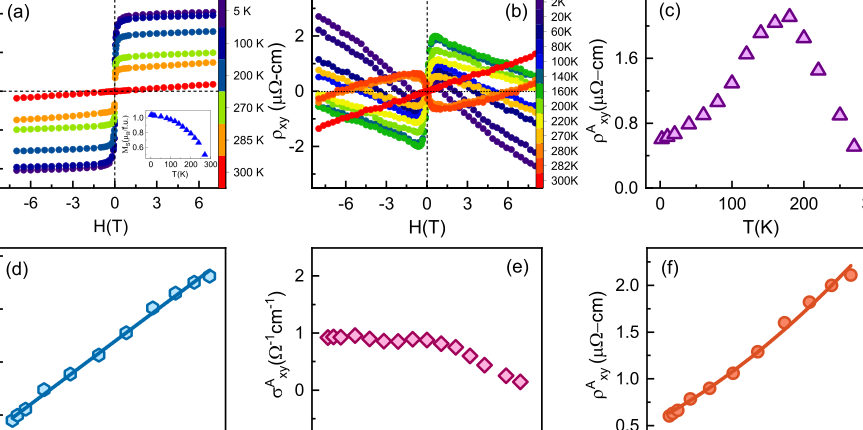
<figcaption class="paper-figure-caption"><b>Fig 1.</b> Figure 1. (a) Magnetic field dependent magnetization M at different temperatures. (b) Magnetic field dependent Hall resistivity ρxy at different temperatures. (c) Temperature dependent anomalous Hall resistivity ρA xy. (d) The plot of log ρA xy and log ρxx data, solid black line indicating the fit using the relation ρA xy ∝ργ xx. (e) Temperature dependent anomalous Hall conductivity σA xy. (f) The plot between ρA xy and ρxx, solid line representing the fit using Eq.(3).</figcaption>
</figure>
<figure class="paper-figure-card">
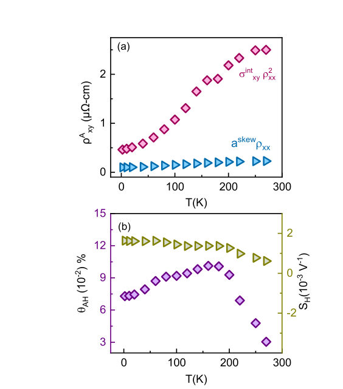
<figcaption class="paper-figure-caption"><b>Fig 2.</b> Figure 2. (a) Extrinsic (askewρxx) and intrinsic (σint xy ρ2 xx) con- tribution in ρA xy as a function of temperature. (b) Temper- ature dependent anomalous Hall angle θAH and anomalous scaling coefficient SH.</figcaption>
</figure>
<figure class="paper-figure-card">
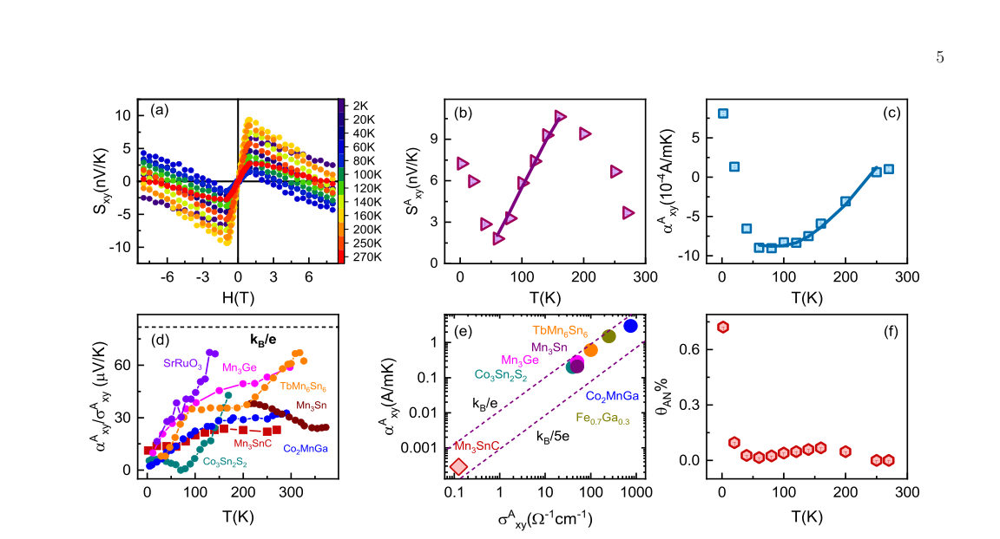
<figcaption class="paper-figure-caption"><b>Fig 3.</b> Figure 3. (a) Magnetic field dependent Nernst signal Sxy at different temperatures. (b) Temperature dependent anomalous Nernst signal SA xy, solid line representing the fit using Eq. (6). (c) Temperature dependent anomalous Nernst conductivity αA xy, solid line representing the fit using Eq. (7). (d) The ratio |αA xy/σA xy| as a function of temperature in different magnets including Mn3Sn [30], Mn3Ge [31], SrRuO3 [32], Co2MnGa [33], Co3Sn2S2 [34], TbMn6S6 [35] and Mn3SnC. (e) Plot between αA xy and σA xy for Mn3SnC and other reported materials at room temperature (Mn3SnC and Co3Sn2S2 are taken at 270 K and 170 K, respectively because of the magnetic order. (f) Anomalous Nernst angle θAN as a...</figcaption>
</figure>
</div>

<p><strong>Summary.</strong> This work reports on anomalous transport in the magnetic nodal-line semimetal $    ext{Mn}_3   ext{SnC}$. By analyzing both AHE and ANE, the authors demonstrate that these effects originate primarily from the intrinsic Berry curvature mechanism. This finding is significant because it provides strong evidence for topological contributions to electronic transport in magnetically ordered materials.</p>
<p><strong>Why it may be interesting.</strong> While focused on condensed matter magnetism and topology, the rigorous separation of transport mechanisms (intrinsic vs. extrinsic) using scaling arguments is a powerful diagnostic tool applicable across many-body physics systems where subtle quantum corrections are expected.</p>
<details>
<summary>Detailed structure</summary>
<p><strong>Main problem.</strong> The study investigates anomalous transport behaviors, specifically the Anomalous Hall Effect (AHE) and Anomalous Nernst Effect (ANE), in a magnetic nodal-line semimetal.</p>
<p><strong>Main result.</strong> Both AHE and ANE are found to be predominantly governed by intrinsic Berry-curvature effects. The ratio of ANE/AHE conductivity is a sizable fraction of k_B/e, confirming this topological origin.</p>
<p><strong>Method.</strong> The authors combine magnetotransport measurements with theoretical analysis, using scaling relations ($
ho_{A,xy} \propto 
ho^{\gamma}_{xx}$) to separate intrinsic (Berry curvature) and extrinsic scattering contributions.</p>
<p><strong>Model / system.</strong> The physical system is the antiperovskite $ ext{Mn}_3   ext{SnC}$, which functions as a nodal-line semimetal exhibiting coexisting antiferromagnetic (AFM) and ferromagnetic (FM) magnetic ordering.</p>
<p><strong>Key observables.</strong> Anomalous Hall resistivity ($
ho_{A,xy}$), Anomalous Nernst conductivity ($\alpha_{A}^{xy}$), the ratio $|\alpha_{A}^{xy}/\sigma_{A}^{xy}|$, and temperature/field dependence of these quantities.</p>
<p><strong>Important parameters / regimes.</strong> Temperature range ($2 - 300 	ext{ K}$), magnetic field up to $8 	ext{ T}$, and the characteristic energy scale set by $k_B/e$.</p>
<p><strong>Assumptions / limitations.</strong> The analysis assumes that anomalous transport can be decomposed into intrinsic (Berry curvature) and extrinsic scattering contributions, and utilizes Mott's relation to link AHE and ANE.</p>
<p><strong>Figures summary.</strong> Figures illustrate the temperature dependence of magnetizations, $
ho_{Axy}$ vs $
ho_{xx}$ plots separating skew and intrinsic contributions, and Nernst signal dependencies on magnetic field and temperature.</p>
<p><strong>Paper structure.</strong> The paper systematically analyzes transport measurements to separate AHE origins (skew vs. intrinsic) using scaling laws, then extends this analysis to the ANE by relating it to AHE via Mott's relation, concluding that Berry curvature dominates both effects.</p>
</details>
<details>
<summary>Abstract</summary>
<p>The interplay of topological surface states and magnetism gives rise to unconventional transport behaviors such as the anomalous Hall effect (AHE) and anomalous Nernst effect (ANE). Antiperovskites such as Mn$3$SnC, which are nodal-line semimetals and exhibit concurrent antiferromagnetic (AFM) and ferromagnetic (FM) ordering, provide a fertile ground for anomalous transport phenomena. Here, we report that the anomalous transport (AHE and ANE) in this compound is predominantly governed by the intrinsic Berry-curvature effect. We establish a unified relationship between the AHE and ANE using Mott's relation. Electron scattering by both AFM and FM magnons is manifested in the anomalous Nernst signal. The ratio of the anomalous Nernst conductivity to the anomalous Hall conductivity, $|α^A{xy}|/σ^A_{xy}$, constitutes a sizable fraction of $k_B/e$, indicating a strong Berry-curvature contribution to the ANE.</p>
</details>
<p><sub><a href="#top">↑ back to top</a></sub></p>

<p><a id="paper-2606.20347"></a></p>
<h3 id="critical-percolation-as-a-synthetic-data-model-for-interpretability"><a href="http://arxiv.org/abs/2606.20347v1">Critical Percolation as a Synthetic Data Model for Interpretability</a></h3>
<p><strong>Authors:</strong> Aryeh Brill, Tom Ingebretsen Carlson<br>
<strong>Type:</strong> both · <strong>Category:</strong> disordered systems and neural networks · <strong>PDF:</strong> <a href="https://arxiv.org/pdf/2606.20347v1">https://arxiv.org/pdf/2606.20347v1</a><br>
<strong>Analysis basis:</strong> full PDF text, analyzed in chunks
<strong>Topic relevance:</strong> <code>driven-dissipative phase transition</code> <strong>1/5</strong> · <code>methods for driven-dissipative</code> <strong>1/5</strong> · <code>non-equilibrium dynamics</code> <strong>1/5</strong> · <code>non-equilibrium universality</code> <strong>1/5</strong></p>
<div class="figure-strip-hint">↔ Scroll figures horizontally</div>
<div class="paper-figures-scroll">
<figure class="paper-figure-card">
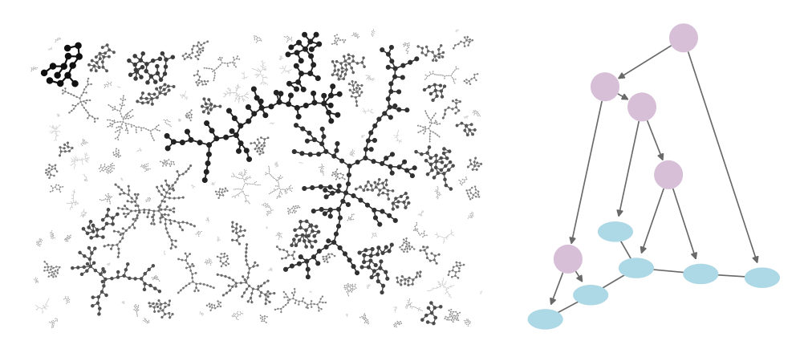
<figcaption class="paper-figure-caption"><b>Fig 1.</b> Figure 1. The percolation data model. (a) Inputs are distributed as self-similar fractal clusters with power-law sizes. (b) Targets are generated by hierarchical latent variables decomposing each cluster.</figcaption>
</figure>
<figure class="paper-figure-card">
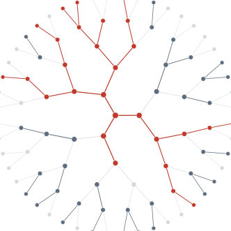
<figcaption class="paper-figure-caption"><b>Fig 2.</b> Figure 2. Bethe lattice percolation. Red: infinite cluster. Blue: finite clusters.</figcaption>
</figure>
<figure class="paper-figure-card">
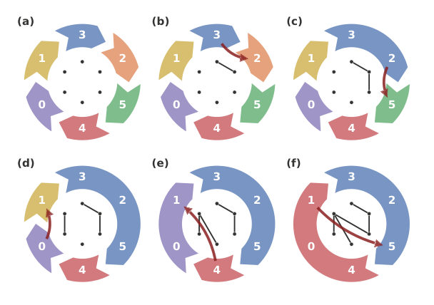
<figcaption class="paper-figure-caption"><b>Fig 3.</b> Figure 3. Example run of the cyclic coalescent. (a) Initialize nodes in a random cycle. (b–f) At each step, connect a random node to a random node in its block’s successor, merging those blocks.</figcaption>
</figure>
<figure class="paper-figure-card">
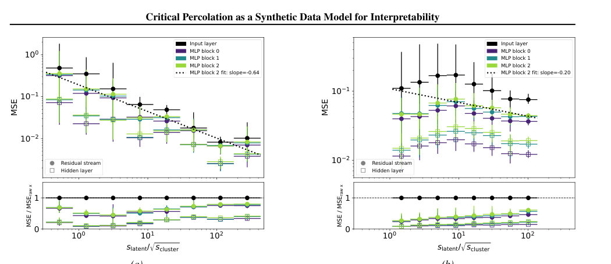
<figcaption class="paper-figure-caption"><b>Fig 4.</b> Figure 4. Per-latent linear probe performance for individual latent values zi, showing (a) the one-cluster dataset and (b) the multi-cluster dataset. Dots (squares) mark the median MSE for the residual stream (hidden activations). Error bars show 25th and 75th percentiles. The ratio panels show each layer’s per-latent MSE normalized by the MSE of probes trained on the raw input.</figcaption>
</figure>
<figure class="paper-figure-card">
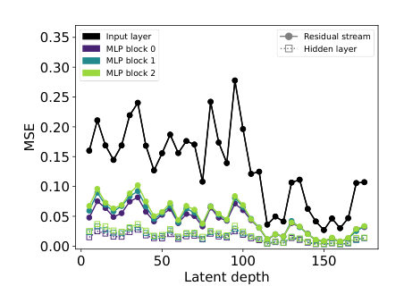
<figcaption class="paper-figure-caption"><b>Fig 5.</b> Figure 5. Linear probe recovery of latent values zi for the one- cluster dataset, stratified by latent depth.</figcaption>
</figure>
</div>

<p><strong>Summary.</strong> This paper introduces critical percolation as a principled synthetic data model to test the limits of neural network interpretability. By generating data from sparse, self-similar fractal clusters whose structure is governed by random trees, the authors demonstrate that ground-truth hierarchical latent variables can be successfully decoded using linear probes on trained MLPs.</p>
<p><strong>Why it may be interesting.</strong> The rigorous connection between statistical physics concepts (critical phenomena, fractal geometry) and machine learning diagnostics provides a powerful, physically motivated benchmark for understanding feature representations in deep networks.</p>
<details>
<summary>Detailed structure</summary>
<p><strong>Main problem.</strong> Existing synthetic datasets for interpretability lack the complex, multi-scale structure found in natural data. The goal is to create a principled testbed that incorporates realistic structural features.</p>
<p><strong>Main result.</strong> Critical percolation provides such a testbed because its inherent properties—sparsity, self-similarity, and power-law statistics—allow ground-truth latent variables to be linearly decoded from neural network activations.</p>
<p><strong>Method.</strong> The authors generate data by embedding nodes on critical mean-field percolation clusters, whose structure is mathematically mapped to random trees using an efficient cyclic coalescent algorithm. They then train MLPs and test linear decoding of the underlying hierarchical latent variables.</p>
<p><strong>Model / system.</strong> The model uses site percolation on a lattice approximated by the Bethe lattice in the critical regime ($p=p_c$). Data points are derived from sparse, low-dimensional fractal clusters whose target values are generated by a hierarchical latent variable decomposition based on the cluster's underlying random tree structure.</p>
<p><strong>Key observables.</strong> Linear decoding performance ($ ext{R}^2$, MSE) of ground-truth latent variables; Cluster size distribution (power law $\propto s^{-5/2}$); Fractal dimension ($D < d$).</p>
<p><strong>Important parameters / regimes.</strong> Critical probability $p_c$; Embedding dimension $d$; Latent variable depth; Figure of Merit ($    ext{FOM} \equiv s_{ ext{latent}} / \sqrt{s_{    ext{cluster}}}$).</p>
<p><strong>Assumptions / limitations.</strong> The model relies on the mean-field approximation ($d \gg u$) and assumes that targets follow a simple hierarchical construction. It also notes limitations regarding modeling compositional relationships.</p>
<p><strong>Figures summary.</strong> Figures illustrate the percolation data generation (fractal clusters, latent decomposition), validation of the cyclic coalescent process using Prüfer sequences and degree distributions, and probe performance comparing one-cluster vs. multi-cluster datasets.</p>
<p><strong>Paper structure.</strong> The paper first establishes the need for structured synthetic data. It then details the mathematical construction based on critical mean-field percolation clusters and their equivalence to random trees via coalescent processes. Finally, it applies this model by generating datasets (one/multi-cluster) and testing interpretability methods using linear probing of trained MLPs.</p>
</details>
<details>
<summary>Abstract</summary>
<p>Neural networks learn features that reflect the hierarchical, multi-scale structure of natural data. Synthetic datasets used to evaluate interpretability methods typically lack this structure, limiting their value as realistic toy models. To close this gap, we introduce a family of synthetic datasets consisting of hierarchical functions defined on critical mean-field percolation clusters embedded in a high-dimensional data space. The percolation data consists of sparse, low-dimensional fractal clusters with a power-law size distribution. Latent variables modeling a taxonomic hierarchy generate each data point's target value. The data model is analytically tractable with known critical exponents that fix its properties without requiring hyperparameter tuning. We leverage a mapping between percolation clusters, random trees, and additive coalescence to propose an almost linear-time algorithm to jointly sample a random tree and its hierarchical latent decomposition, enabling data generation at arbitrary scale. Using probing experiments, we find that the model's ground-truth latent variables can be linearly decoded from neural network activations. Together, sparsity, self-similarity, power-law statistics, and analytical tractability make critical percolation a principled testbed for interpretability research.</p>
</details>
<p><sub><a href="#top">↑ back to top</a></sub></p>

<p><a id="paper-2606.19511"></a></p>
<h3 id="distinguishing-quantum-processes-with-bounded-coherent-memory"><a href="http://arxiv.org/abs/2606.19511v1">Distinguishing quantum processes with bounded coherent memory</a></h3>
<p><strong>Authors:</strong> Magdalini Zonnios, Felix C. Binder<br>
<strong>Type:</strong> theory · <strong>Category:</strong> quantum information and computing · <strong>PDF:</strong> <a href="https://arxiv.org/pdf/2606.19511v1">https://arxiv.org/pdf/2606.19511v1</a><br>
<strong>Analysis basis:</strong> full PDF text, analyzed in chunks
<strong>Topic relevance:</strong> <code>correlated / nonlocal dissipation</code> <strong>1/5</strong> · <code>driven-dissipative phase transition</code> <strong>1/5</strong> · <code>entanglement &amp; information structure</code> <strong>1/5</strong> · <code>methods for driven-dissipative</code> <strong>1/5</strong></p>
<div class="figure-strip-hint">↔ Scroll figures horizontally</div>
<div class="paper-figures-scroll">
<figure class="paper-figure-card">
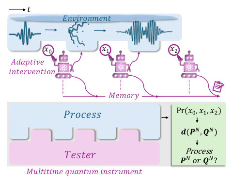
<figcaption class="paper-figure-caption"><b>Fig 1.</b> Figure 1. Multi-time process discrimination as an oper- ational task. An experimenter probes a process at several times, stores information in memory, and obtains an outcome record (x0, x1, x2). Equivalently, a tester, i.e. a multi-time quantum instrument, is inserted into the slots of a process comb to produce statistics used to decide whether the pro- cess was PN or QN.</figcaption>
</figure>
<figure class="paper-figure-card">
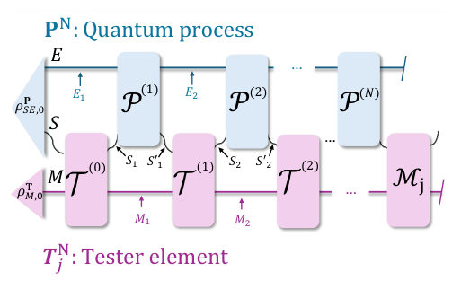
<figcaption class="paper-figure-caption"><b>Fig 2.</b> Figure 2. A quantum process over N time steps can be rep- resented as a quantum comb PN (blue), with open “slots” on the system where interventions may be performed. A multi- time tester {TN j }j (pink) is a correlated sequence of opera- tions (potentially with memory) inserted into these slots to produce an outcome j. Without loss of generality, any tester can be written as a sequence of CPTP maps followed by a final quantum instrument {Mj}j, so that all intermediate measurements can be deferred to a single measurement at the end. The number of possible outcomes grows as the product of the number of outcomes at each time step, and is therefore generally exponential in N. Contracting a...</figcaption>
</figure>
<figure class="paper-figure-card">
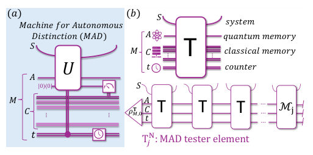
<figcaption class="paper-figure-caption"><b>Fig 3.</b> Figure 3. (a) A machine for autonomous distinction (MAD) is a probing device modelled as a quantum instrument act- ing on the system and a coherent ancillary memory. Each use of the instrument can be realized by a unitary interaction with an auxiliary probe followed by a projective measurement on the probe, its nonselective action being CPTP. In the au- tonomous implementation shown here, the unitary acts on the system and quantum memory, while a classical counter spec- ifies which output register stores the outcome and, if desired, allows explicit time dependence to be encoded internally. (b) A MAD tester is obtained by repeatedly applying the same MAD to the process slots as a special...</figcaption>
</figure>
<figure class="paper-figure-card">
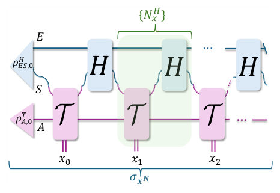
<figcaption class="paper-figure-caption"><b>Fig 4.</b> Figure 4. A recurrent process hypothesis probed by a MAD tester. The recurrent process HH (blue) is obtained by re- peatedly applying H which interacts with a persistent envi- ronment E, while a fixed quantum instrument {T (x)}x (pur- ple) acts jointly on the system and quantum memory A at each time step. The instrument produces a classical outcome xk that is stored, generating a trajectory x0:N, while the sys- tem and memory evolve coherently. The induced single-step maps {N T,H x }x (highlighted in green) also correspond to a quantum instrument and describe the joint action of the pro- cess and tester at each step, and generate the branchwise states ˆσT,H x0:N .</figcaption>
</figure>
<figure class="paper-figure-card">
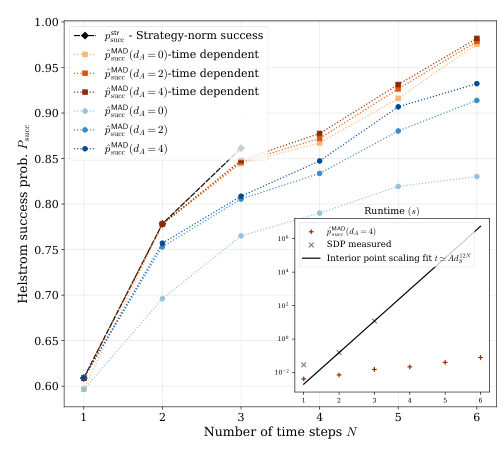
<figcaption class="paper-figure-caption"><b>Fig 5.</b> Figure 5. Helstrom success probability pMAD succ for numer- ically optimized MAD testers distinguishing the repeated- interaction processes generated by the unitaries in Eq. (40), with θP = 0.2 and θQ = 0.5, compared with the strategy- norm success benchmark. Increasing the coherent ancilla di- mension dA ∈{0, 2, 4}, for a time-dependent strategy (orange lines), or time-independent strategy (blue lines), systemati- cally improves performance, illustrating the coherent-memory MAD hierarchy and its convergence toward the strategy-norm benchmark. For fixed coherent ancilla dimension dA = 0 (no coherent memory), allowing explicit time dependence through a classical counter substantially...</figcaption>
</figure>
</div>

<p><strong>Summary.</strong> The paper addresses the difficulty of distinguishing complex, multi-time quantum processes due to exponentially scaling computational requirements. It introduces 'Machines for Autonomous Distinction' (MADs), which restrict testing strategies based on a bounded coherent memory dimension ($d_A$). This results in a scalable distinguishability measure that provides an operational lower bound on the true optimal discrimination capability.</p>
<p><strong>Why it may be interesting.</strong> This work provides a crucial bridge between theoretically optimal but computationally intractable measures (like the strategy norm) and practically measurable quantities by quantifying the role of finite quantum memory in process characterization.</p>
<details>
<summary>Detailed structure</summary>
<p><strong>Main problem.</strong> The core problem is developing a computationally tractable measure for distinguishing between two multi-time quantum processes ($P_N$ vs $Q_N$) when the optimal strategy requires an exponentially large coherent memory.</p>
<p><strong>Main result.</strong> The introduction of Machines for Autonomous Distinction (MADs) provides a scalable, memory-constrained distinguishability measure that is proven to saturate the full strategy-norm benchmark as the available coherent memory dimension increases.</p>
<p><strong>Method.</strong> The authors restrict the set of admissible probing strategies to those compatible with bounded coherent memory ($d_A$), leading to a memory-parametrized distinguishability measure $d^{(N)}_{\mathsf{MAD}}$.</p>
<p><strong>Model / system.</strong> The study analyzes multi-time quantum processes, modeled using process tensors or quantum combs ($  ext{P}_N$), which represent the input-output behavior over sequential time steps via CPTP maps.</p>
<p><strong>Key observables.</strong> Memory-parametrized distinguishability measure ($d^{(N)}_{\mathsf{MAD}}$), strategy-norm distance ($d_{	ext{str}}$), and the success probability of discrimination ($p^*_{	ext{succ}}$).</p>
<p><strong>Important parameters / regimes.</strong> Coherent memory dimension ($d_A$), number of time steps ($N$), and the process tensors ($\mathbf{P}^N, \mathbf{Q}^N$).</p>
<p><strong>Assumptions / limitations.</strong> The primary assumption is that restricting the tester to bounded coherent memory ($d_A$) provides a useful operational lower bound on the true distinguishability, which can be shown to converge to the full benchmark for finite $N$.</p>
<p><strong>Figures summary.</strong> Figures illustrate multi-time process discrimination as an operational task involving sequential probing and memory storage; one figure shows the interaction between a quantum comb ($    ext{PN}$) and a multi-time tester (${    ext{T}^j_N}_j$).</p>
<p><strong>Paper structure.</strong> The paper first establishes the limitations of the full strategy-norm distance, then introduces MADs as a memory-constrained alternative. It develops theoretical results showing monotonicity and completeness, derives single-step descriptions for recurrent processes, and concludes with numerical evidence demonstrating scalability.</p>
</details>
<details>
<summary>Abstract</summary>
<p>Distinguishing multi-time quantum processes is a fundamental task underlying the diagnosis, benchmarking, and learning of temporally correlated quantum dynamics. The standard benchmark for distinguishing two processes is the strategy-norm distance, which optimizes over arbitrary adaptive probing strategies but can require large coherent memory and time-dependent control. We introduce machines for autonomous distinction~($\mathsf{MAD}$s): probing strategies that apply the same quantum instrument at each time step, retain the full classical outcome record, and carry a coherent memory of dimension $d_A$. Optimizing over these strategies defines a memory-parametrized distinguishability measure, $d^{(N)}_{\mathsf{MAD}}(\mathbf{P}^N,\mathbf{Q}^N;d_A)$. We show that the resulting hierarchy is monotone in coherent memory and complete at finite times. Specifically, any admissible $N$-step probing strategy can be compiled into a single $\mathsf{MAD}$ with an internal counter and sufficiently large coherent memory, so the hierarchy saturates the strategy-norm benchmark. For recurrent processes generated by repeated system--environment interactions, we derive a single-step description that separates the generation of new distinguishing information from the propagation and decay of information generated at earlier times. Numerical results in a repeated-interaction model show that increasing coherent memory systematically improves the $\mathsf{MAD}$ success probability and closes the gap to the strategy-norm distance while remaining substantially more tractable to evaluate. $\mathsf{MAD}$ distinguishability therefore provides an operational and scalable framework for quantifying what can be learned about genuinely multi-time quantum processes with bounded coherent memory.</p>
</details>
<p><sub><a href="#top">↑ back to top</a></sub></p>

<p><a id="paper-2606.20519"></a></p>
<h3 id="gpu-accelerated-semidefinite-programming-for-causal-games"><a href="http://arxiv.org/abs/2606.20519v1">GPU-accelerated semidefinite programming for causal games</a></h3>
<p><strong>Authors:</strong> Emanuel-Cristian Boghiu, Kyrylo Simonov<br>
<strong>Type:</strong> theory · <strong>Category:</strong> quantum information and computing · <strong>PDF:</strong> <a href="https://arxiv.org/pdf/2606.20519v1">https://arxiv.org/pdf/2606.20519v1</a><br>
<strong>Analysis basis:</strong> full PDF text, analyzed in chunks
<strong>Topic relevance:</strong> <code>driven-dissipative phase transition</code> <strong>1/5</strong> · <code>entanglement &amp; information structure</code> <strong>1/5</strong> · <code>methods for driven-dissipative</code> <strong>1/5</strong></p>
<div class="figure-strip-hint">↔ Scroll figures horizontally</div>
<div class="paper-figures-scroll">
<figure class="paper-figure-card">
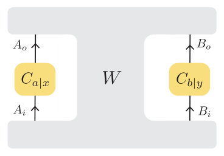
<figcaption class="paper-figure-caption"><b>Fig 1.</b> FIG. 1. Schematic representation of the bipartite scenario within the process matrix formalism. Given local instruments Ca|x and Cb|y, the process matrix W assigns joint probabilities p(ab|xy) = tr[W(Ca|x⊗Cb|y)] for all settings x, y and outcomes a, b.</figcaption>
</figure>
<figure class="paper-figure-card">
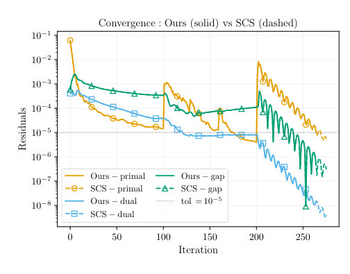
<figcaption class="paper-figure-caption"><b>Fig 2.</b> FIG. 2. Residual evolution for a representative process-matrix SDP with local dimension d = 4. The reference implemen- tation is SCS 3.2.11 with all default settings, except that data normalization is disabled in both solvers. The residual histories agree almost exactly on an iteration-by-iteration ba- sis, confirming that the implementations produce the same ADMM iterates. The discrepancy in the final iteration number is due solely to the termination-check frequency: SCS eval- uates convergence every 25 iterations and therefore reports residuals up to iteration 275, whereas our implementation checks convergence every iteration and terminates at iteration 264.</figcaption>
</figure>
</div>

<p><strong>Summary.</strong> This work uses GPU-accelerated Semidefinite Programming to study quantum correlations violating definite causal order via the GYNI game. The authors test if increasing local dimension improves the achievable bound but find diminishing returns. This suggests that improving the theoretical upper bound or finding fundamentally different strategies is necessary.</p>
<p><strong>Why it may be interesting.</strong> It provides advanced computational techniques (GPU-accelerated SDP solving) to probe fundamental questions about causality in quantum mechanics, which is highly relevant for understanding resource theories beyond standard entanglement.</p>
<details>
<summary>Detailed structure</summary>
<p><strong>Main problem.</strong> The research investigates whether increasing the local dimension ($d$) can narrow the gap between the best known process-matrix strategy value ($\approx 0.6218$) and the strongest upper bound for correlations violating definite causal order in the Guess-Your-Neighbour's-Input (GYNI) game.</p>
<p><strong>Main result.</strong> The study found no significant improvement in the winning probability when increasing the local dimension up to $d=8$, suggesting that either qualitatively different strategies are needed or the known upper bound is not tight.</p>
<p><strong>Method.</strong> Optimization relies on formulating the problem as a sequence of Semidefinite Programs (SDPs) solved using a see-saw optimization scheme, significantly accelerated by offloading the projection onto the positive-semidefinite cone to a GPU.</p>
<p><strong>Model / system.</strong> The study analyzes quantum correlations described by the process matrix formalism, which models scenarios lacking a fixed causal order between local laboratories. The paradigmatic example is the bipartite GYNI game used to test for violations of definite causal orders.</p>
<p><strong>Key observables.</strong> Winning probability ($\omega_{GYNI}$) in the GYNI game; violation of causal inequalities.</p>
<p><strong>Important parameters / regimes.</strong> Local dimension ($d$); best known strategy value ($\approx 0.6218$); upper bound ($\approx 0.7592$).</p>
<p><strong>Assumptions / limitations.</strong> The analysis assumes that the optimal correlations can be captured within the process matrix formalism and that SDP solvers provide sufficient accuracy.</p>
<p><strong>Figures summary.</strong> Table I summarizes $\omega_{GYNI}$ as a function of $d$, showing slow growth; Table IV compares computational time for solving representative SDPs across increasing dimensions, highlighting GPU speedups.</p>
<p><strong>Paper structure.</strong> The paper develops the theoretical framework using process matrices and causal games, details the optimization via see-saw SDPs, implements this efficiently on GPUs, and concludes by analyzing the scaling of the achievable bound with local dimension $d$.</p>
</details>
<details>
<summary>Abstract</summary>
<p>The process matrix formalism describes quantum correlations in scenarios without a fixed causal order between local laboratories. Operational signatures of such correlations can be investigated through causal games. A paradigmatic example is the Guess-Your-Neighbour's-Input game, in which two parties attempt to guess each other's inputs. Correlations compatible with any definite, or probabilistically mixed, causal order cannot achieve a winning probability exceeding $1/2$. The best process-matrix strategy currently known attains a value of approximately $0.6218$ using local dimension $d=5$, while the strongest known dimension-independent upper bound is $0.7592$. In this work, we investigate whether increasing the local dimension beyond $d = 5$ can narrow this gap. To this end, we employ a see-saw optimization scheme in which each step is formulated as a semidefinite program. For scalability, we develop a custom implementation of the SCS solver in which the dominant computational cost, the projection onto the positive-semidefinite cone, is offloaded to a GPU, yielding a six-fold speedup. Using this implementation, we explore local dimensions up to $d = 8$, and we do not find significant improvements over the value at $d=5$. Our results suggest that either qualitatively different strategies are required to approach the known upper bound, or that the bound itself is not tight.</p>
</details>
<p><sub><a href="#top">↑ back to top</a></sub></p>

<p><a id="paper-2606.19873"></a></p>
<h3 id="random-local-stabilizer-codes-in-three-dimensions-without-string-or-self-similar-fractal-logical-operators"><a href="http://arxiv.org/abs/2606.19873v1">Random Local Stabilizer Codes in Three Dimensions without String or Self-Similar Fractal Logical Operators</a></h3>
<p><strong>Authors:</strong> Han Yan<br>
<strong>Type:</strong> theory · <strong>Category:</strong> quantum information and computing · <strong>PDF:</strong> <a href="https://arxiv.org/pdf/2606.19873v1">https://arxiv.org/pdf/2606.19873v1</a><br>
<strong>Analysis basis:</strong> full PDF text, analyzed in chunks
<strong>Topic relevance:</strong> <code>correlated cavity matter</code> <strong>1/5</strong> · <code>driven-dissipative phase transition</code> <strong>1/5</strong> · <code>entanglement &amp; information structure</code> <strong>1/5</strong></p>
<div class="figure-strip-hint">↔ Scroll figures horizontally</div>
<div class="paper-figures-scroll">
<figure class="paper-figure-card">
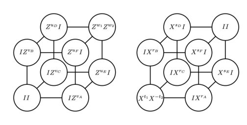
<figcaption class="paper-figure-caption"><b>Fig 1.</b> FIG. 1. Local cube-check structure for Qutrit Random Cubic Codes (QtHC). The left panel shows the Z-check Ar and the right panel shows the reflected X-check Br. Each cube corner carries two qutrits, and the corresponding operators are displayed. With the corner convention of Eq. (4), the Z-check has no support at O and two-qutrit support at G, while the X-check has two-qutrit support at O and no support at G. The remaining six corners are one-operator corners.</figcaption>
</figure>
<figure class="paper-figure-card">
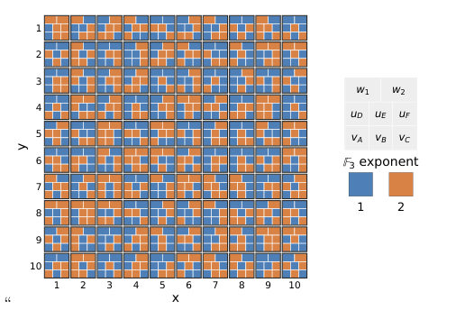
<figcaption class="paper-figure-caption"><b>Fig 2.</b> FIG. 2. Example of an admissible Z-check coefficient field. The figure shows the z = 0 slice of the curated L = 10 exam- ple L10_model_01 [60]. Each square is one cube anchor and contains a compact glyph for the eight nonzero coefficients (w1, w2, uD, uE, uF , vA, vB, vC) of the local Z-check. Blue de- notes the finite-field value 1 ∈F3, and orange denotes 2 ∈F3. With translation invariance along the [111] direction, this plot defines the stabilizer code unambiguously.</figcaption>
</figure>
<figure class="paper-figure-card">
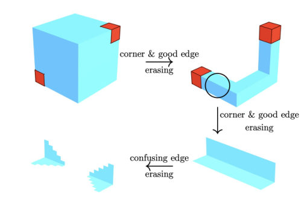
<figcaption class="paper-figure-caption"><b>Fig 3.</b> FIG. 3. Schematic of the no-string proof strategy. A large connected support has stabilizer-violation regions shown as red cubes. Corner and good-edge erasing deform the rep- resentative to an axis-aligned corridor connecting the same endpoint charges. Further erasing gives the two flat rectangles. The confusing constraint then removes rows from the exposed edges: the white erased interval is longest on the outer row and shortens row by row as the induction moves inward, even- tually cutting the flat segment open if it is sufficiently long. The disconnected representative contradicts nontriviality of a sufficiently long fixed-width logical string segment.</figcaption>
</figure>
<figure class="paper-figure-card">
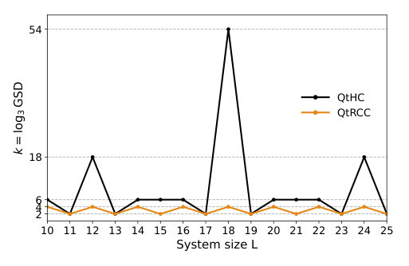
<figcaption class="paper-figure-caption"><b>Fig 4.</b> FIG. 4. Ground-state degeneracy k = log3 GSD comparison for 10 ≤L ≤25. The translation-invariant QtHC reference model exhibits arithmetic finite-size fluctuations, including the large spike k = 54 at L = 18. The retained minimal- degeneracy QtRCC collection follows the parity pattern of Eq. (22), with k = 2 for odd L and k = 4 for even L.</figcaption>
</figure>
<figure class="paper-figure-card">
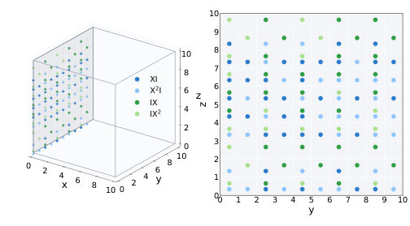
<figcaption class="paper-figure-caption"><b>Fig 5.</b> FIG. 5. Example plane-supported X logical representative for the curated QtRCC example L10_model_01 [60]. The left panel gives a three-dimensional view of the operator support on the plane x = 0, and the right panel shows the same support projected to the transverse y-z plane. Blue markers denote first-qutrit factors XI, green markers denote second-qutrit factors IX, and the two shades distinguish exponents 1 and 2 in F3. This selected quotient-basis representative has weight 120: it occupies 90 of the 102 lattice sites in the plane, with 30 sites carrying both qutrit factors.</figcaption>
</figure>
</div>

<p><strong>Summary.</strong> This paper introduces qutrit random cubic codes ($ ext{QtRCC}$) as an alternative to traditional topological QECs. By adapting complex geometric proofs from Haah's work to the qutrit setting, the authors prove that $   ext{QtRCC}$ remains free of string logical operators while simultaneously eliminating the self-similar fractal operators found in uniform models. This demonstrates that constrained randomness can yield novel and potentially superior quantum error-correcting phases.</p>
<p><strong>Why it may be interesting.</strong> The work provides a concrete example of how introducing controlled randomness into highly structured quantum codes can fundamentally alter their underlying physical properties, moving beyond purely translation-invariant models.</p>
<details>
<summary>Detailed structure</summary>
<p><strong>Main problem.</strong> The primary goal is to develop robust Quantum Error-Correcting Codes (QECs) that are passive self-correcting, specifically by proving the absence of string logical operators in three dimensions.</p>
<p><strong>Main result.</strong> The proposed qutrit random cubic codes ($  ext{QtRCC}$) retain the no-string property and exhibit distinct properties from translation-invariant fracton codes, suggesting improved self-correction capabilities via constrained randomness.</p>
<p><strong>Method.</strong> The authors employ rigorous algebraic proofs by adapting geometric techniques (like corner/edge erasing) used in Haah's original work to the qutrit ($\mathbb{F}_3$) setting. They also use numerical diagnostics like charge-push protocols and GSD calculations.</p>
<p><strong>Model / system.</strong> The system is a family of local qutrit Calderbank-Shor-Steane stabilizer Hamiltonians defined on a cubic lattice, generalizing Haah's Code 1 structure but incorporating spatially varying stabilizers (QtRCC).</p>
<p><strong>Key observables.</strong> Ground-state degeneracy exponent ($k$), minimum weight of plane-supported logical operators ($ ext{w}_{\min}$), and the absence of fractal recurrence in charge-push diagnostics.</p>
<p><strong>Important parameters / regimes.</strong> The lattice size $L$, the qutrit nature ($\mathbb{Z}_3$ coefficients), and the parity dependence of the GSD exponent ($k=2$ for odd $L$, $k=4$ for even $L$).</p>
<p><strong>Assumptions / limitations.</strong> The analysis assumes that the random models are sampled only from the 'admissible set' defined by global stabilizer relations and local commutation constraints, and that all relevant coefficients are nonzero.</p>
<p><strong>Figures summary.</strong> Figures compare the ground-state degeneracy exponent ($k$) between uniform (QtHC) and random (QtRCC) codes, showing a stable parity pattern for QtRCC. They also visually demonstrate the absence of power-of-three fractal recurrence in charge-push diagnostics for QtRCC compared to QtHC.</p>
<p><strong>Paper structure.</strong> The paper builds logically by first establishing the necessary algebraic framework for qutrit checks, then proving the no-string theorem via geometric reduction (corner/edge erasing), and finally using numerical diagnostics (plane scans, charge-push) to confirm the absence of fractal operators and characterize the resulting topological order.</p>
</details>
<details>
<summary>Abstract</summary>
<p>Quantum error-correcting codes (QECs) are essential components quantum computation and have deep connections to quantum phases of matter. A key obstruction to passive self-correcting QECs is the presence of string logical operators, which can generate logical errors through constant-energy-barrier processes. Haah's Codes (fracton codes) showed that three-dimensional stabilizer codes can forbid such string logical operators, but their translation-invariant structure supports self-similar fractal logical operators with a logarithmic energy barrier. We introduce the qutrit random cubic codes, a family of local qutrit Calderbank-Shor-Steane stabilizer Hamiltonians with similar cube-check structure as Haah's Code 1 but built from spatially varying stabilizers. We prove that these models retain the no-string property and numerically observe that they have properties distinct from translation-invariant fracton codes: the smallest ground-state degeneracy exponent is $k=2$ for odd $L$ and $k=4$ for even $L$; noncontractible plane-logical operators span the entire logical space; and charge-push diagnostics show that the self-similar fractal operators are absent. These results demonstrate that constrained randomness can fundamentally change the nature of stabilizer codes and improve their self-correction properties. They further point to broader families of quantum error-correcting codes and quantum phases beyond canonical topological and fracton orders.</p>
</details>
<p><sub><a href="#top">↑ back to top</a></sub></p>

<p><a id="paper-2606.19954"></a></p>
<h3 id="strain-and-electric-field-tunable-valley-polarization-in-mo075v025te2mo3vte8-for-valleytronic-application"><a href="http://arxiv.org/abs/2606.19954v1">Strain- and Electric-Field-Tunable Valley Polarization in Mo0.75V0.25Te2(Mo3VTe8) for Valleytronic Application</a></h3>
<p><strong>Authors:</strong> Md. Mostaqul Islam, Vivek Chowdhury, Md. Nure-Alam-Dipu, Ahmed Zubair<br>
<strong>Type:</strong> theory · <strong>Category:</strong> other · <strong>PDF:</strong> <a href="https://arxiv.org/pdf/2606.19954v1">https://arxiv.org/pdf/2606.19954v1</a><br>
<strong>Analysis basis:</strong> full PDF text, analyzed in chunks
<strong>Topic relevance:</strong> <code>analog quantum simulation</code> <strong>1/5</strong> · <code>exotic spin models in light-matter</code> <strong>1/5</strong> · <code>spintronics-quantum-optics interface</code> <strong>1/5</strong></p>
<div class="figure-strip-hint">↔ Scroll figures horizontally</div>
<div class="paper-figures-scroll">
<figure class="paper-figure-card">
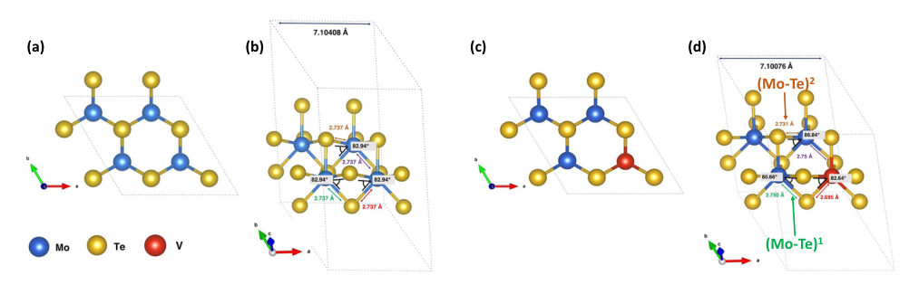
<figcaption class="paper-figure-caption"><b>Fig 1.</b> Fig. 1: Structural details of (a) MoTe2 top view, (b) MoTe2 side view with lattice parameters, bond lengths, bond angles, (c) Mo0.75V0.25Te2 top view, (d) Mo0.75V0.25Te2 side view with lattice parameters, bond lengths, bond angles. Here, (Mo-Te)1 denotes a type-I bond between Mo and Te. Whereas (Mo-Te)2 denotes a type-II bond between Mo and Te.</figcaption>
</figure>
<figure class="paper-figure-card">
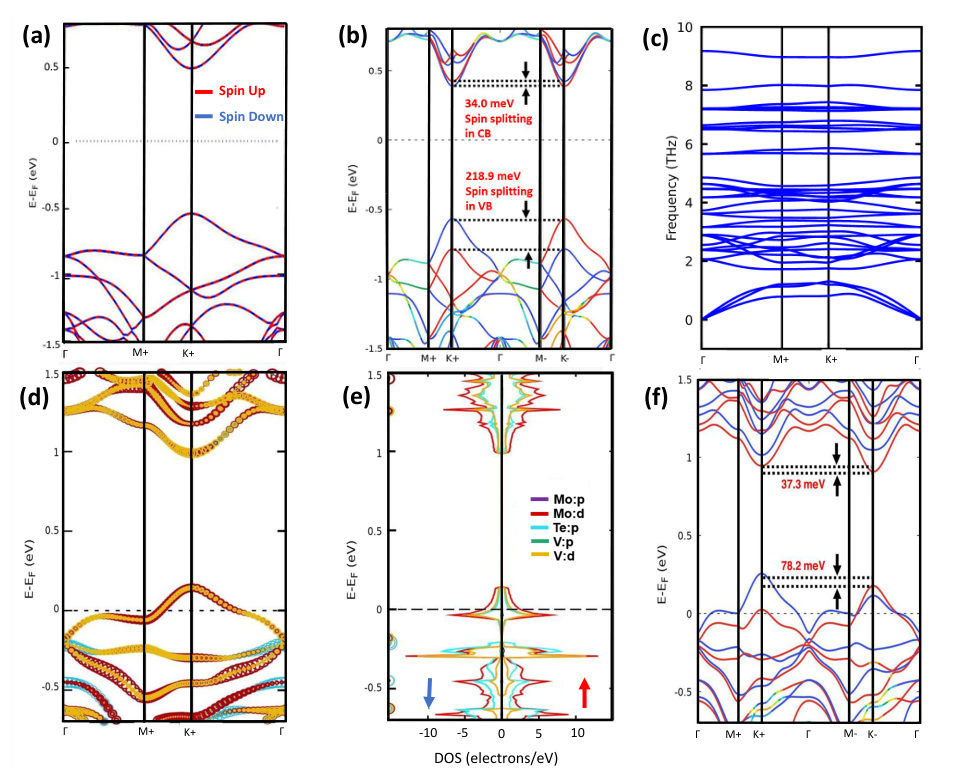
<figcaption class="paper-figure-caption"><b>Fig 2.</b> Fig. 2: Spin polarized band structure of pristine MoTe2 (a) without SOC, (b) with SOC. Red color indicates spin-up and blue color indicates spin-down band. CB means conduction band, and VB means valence band, (c) phonon band dispersion curve of Mo0.75V0.25Te2, (d) projected band structure of Mo0.75V0.25Te2, (e) projected density of states of Mo0.75V0.25Te2, and (f) spin polarized band structure of Mo0.75V0.25Te2 with SOC.</figcaption>
</figure>
<figure class="paper-figure-card">
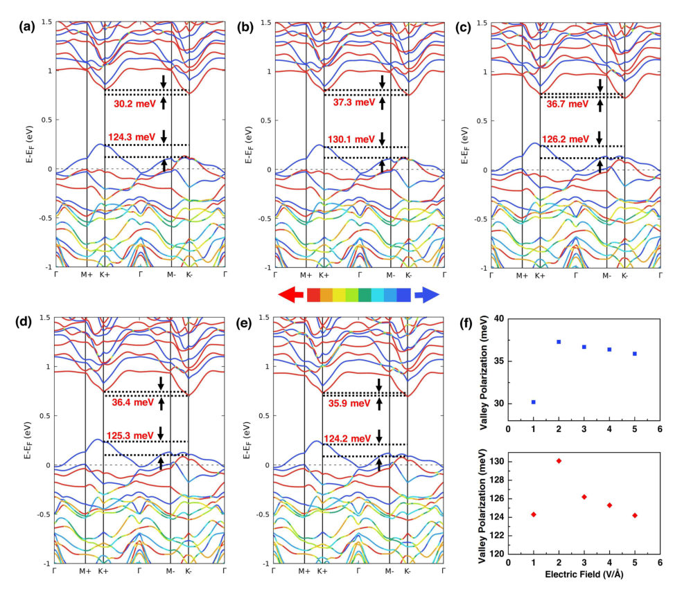
<figcaption class="paper-figure-caption"><b>Fig 3.</b> Fig. 3: Electric field applied along the crystal a axis on Mo0.75V0.25Te2. The band structures with SOC for (a) 0.1 V∕̊A, (b) 0.2 V∕̊A, (c) 0.3 V∕̊A, (d) 0.4 V∕̊A, (e) 0.5 V∕̊A, (f) Plot of valley splitting vs applied electric field. The top blue curve denotes the conduction band valley splitting, and the bottom red curve denotes the valence band valley splitting.</figcaption>
</figure>
<figure class="paper-figure-card">
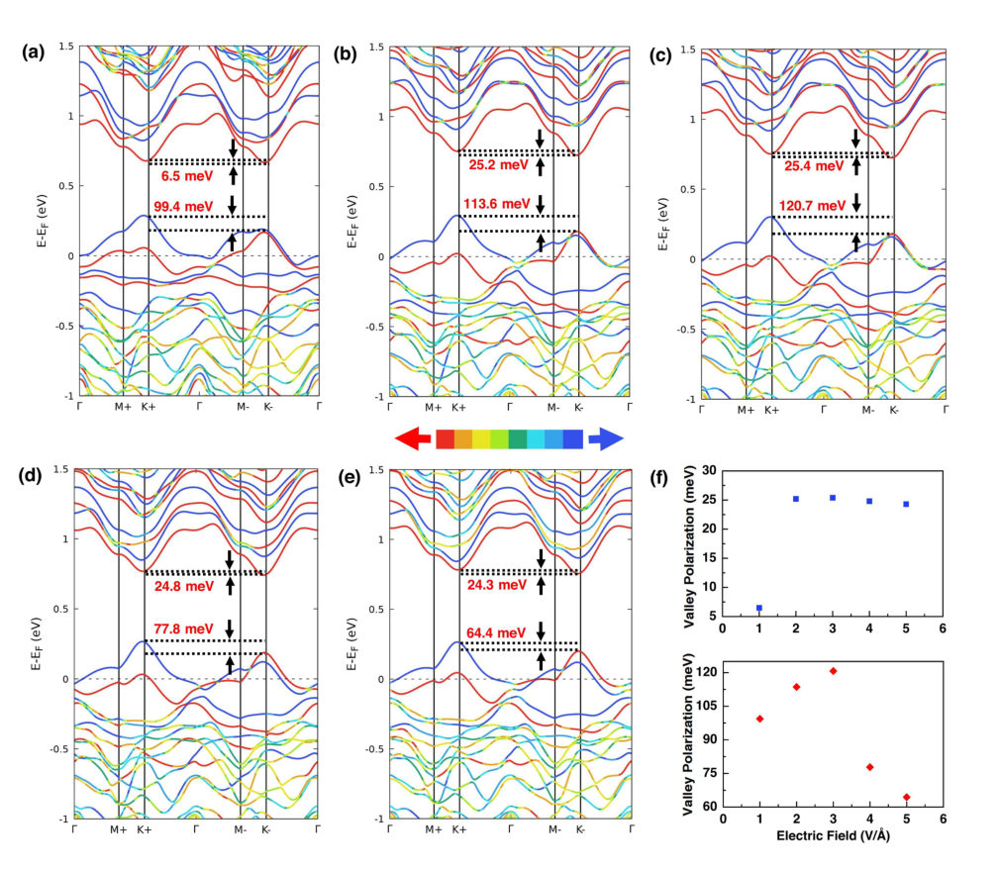
<figcaption class="paper-figure-caption"><b>Fig 4.</b> Fig. 4: Electric field applied along the crystal b axis on Mo0.75V0.25Te2. The band structures with SOC for (a) 0.1 V∕̊A, (b) 0.2 V∕̊A, (c) 0.3 V∕̊A, (d) 0.4 V∕̊A, (e) 0.5 V∕̊A, (f) Plot of valley splitting vs applied electric field. The top blue curve denotes the conduction band valley splitting, and the bottom red curve denotes the valence band valley splitting.</figcaption>
</figure>
<figure class="paper-figure-card">
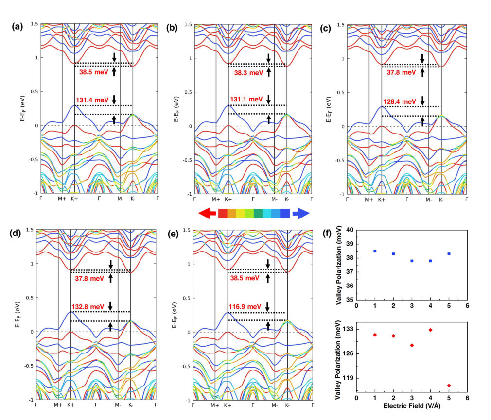
<figcaption class="paper-figure-caption"><b>Fig 5.</b> Fig. 5: Electric field applied along the crystal c axis on Mo0.75V0.25Te2. The band structures with SOC for (a) 0.1 V∕̊A, (b) 0.2 V∕̊A, (c) 0.3 V∕̊A, (d) 0.4 V∕̊A, (e) 0.5 V∕̊A, (f) Plot of valley splitting vs applied electric field. The top blue curve denotes the conduction band valley splitting, and the bottom red curve denotes the valence band valley splitting.</figcaption>
</figure>
</div>

<p><strong>Summary.</strong> This theoretical study investigates $  ext{Mo}<em 0.25>{0.75}  ext{V}</em>_2$, inducing valley polarization, which can then be significantly enhanced and tuned using external biaxial strain or electric fields. This work establishes a robust method for engineering materials with controllable valley degrees of freedom.}   ext{Te}_2$ as a promising 2D platform for valleytronics by using DFT calculations. The authors show that alloying breaks the symmetry of pristine $ ext{MoTe</p>
<p><strong>Why it may be interesting.</strong> While focused on condensed matter physics rather than quantum information protocols, the concept of controlling valley pseudospin via external fields or mechanical strain is a key area in topological/spintronics materials research that interfaces with quantum control concepts.</p>
<details>
<summary>Detailed structure</summary>
<p><strong>Main problem.</strong> The primary goal is to overcome the valley degeneracy inherent in pristine TMDs, which limits their use in valleytronic devices, by engineering materials that exhibit large and tunable valley polarization.</p>
<p><strong>Main result.</strong> V-alloying $   ext{MoTe}<em 0.75>2$ to form $  ext{Mo}</em>_2$, combined with external electric fields or biaxial strain, successfully induces and enhances valley polarization up to $160.8 	ext{ meV}$.}  ext{V}_{0.25}   ext{Te</p>
<p><strong>Method.</strong> The study relies entirely on first-principles Density Functional Theory (DFT) calculations, including non-collinear treatments for Spin-Orbit Coupling (SOC), phonon dispersion analysis, and modeling the effects of strain and electric fields.</p>
<p><strong>Model / system.</strong> The physical system is the $    ext{Mo}<em 0.25>{0.75}  ext{V}</em>$).}   ext{Te}_2$ monolayer, a transition metal dichalcogenide alloy derived from $    ext{MoTe}_2$. The theoretical framework models electronic structure changes due to alloying (introducing magnetic exchange interaction) and external perturbations like strain ($\epsilon$) and electric fields ($\mathbf{E</p>
<p><strong>Key observables.</strong> Valley polarization ($\Delta E = |E_{K^+} - E_{K^-}|$), spin splitting, formation energy ($E_{	ext{formation}}$), phonon frequencies.</p>
<p><strong>Important parameters / regimes.</strong> Strain levels (e.g., $4\%$ tensile strain), electric field strengths (e.g., $0.4 	ext{ V}/\AA$), and alloying concentrations ($  ext{Mo}<em 0.25>{0.75}  ext{V}</em>_2$).}   ext{Te</p>
<p><strong>Assumptions / limitations.</strong> The calculations assume the validity of DFT approximations, including PBE functional and PAW pseudopotentials, to model complex electronic interactions.</p>
<p><strong>Figures summary.</strong> Figures illustrate band structures under varying strain/fields, showing polarization enhancement; phonon dispersion confirms dynamic stability for both pristine $ ext{MoTe}_2$ and the alloy; schematic diagrams propose device concepts utilizing this tunability.</p>
<p><strong>Paper structure.</strong> The paper systematically progresses from establishing the limitations of pristine TMDs to demonstrating the structural and electronic stability of the V-alloyed material, followed by quantitative analysis of how alloying breaks symmetry, and finally detailing the enhancement mechanisms using external fields and strain for practical device realization.</p>
</details>
<details>
<summary>Abstract</summary>
<p>Valley polarization in 2D TMDs is promising for low-power valleytronic and spin-valley information processing, but time-reversal symmetry in pristine nonmagnetic TMDs keeps the K+ and K- valleys degenerate, limiting device applications. In this work, we investigated the structural stability, electronic properties, and tunable valley polarization of V-alloyed MoTe2 monolayer, Mo0.75V0.25Te2, using first-principles density functional theory (DFT) calculations. Substitutional alloying of MoTe2 with V introduced magnetic exchange interaction, which, together with spin-orbit coupling (SOC), lifted the valley degeneracy at the unequal valleys. The alloyed structure was found to be energetically and dynamically stable due to the absence of imaginary phonon modes. In pristine MoTe2, SOC produced spin splittings of 34.0 meV and 218.9 meV in the conduction bands and valence bands, respectively, but no valley polarization was observed. In contrast, Mo0.75V0.25Te2 exhibited spontaneous valley polarization of 37.3 meV in the conduction band and 78.2 meV in the valence band. The valley polarization was further enhanced by external electric fields and biaxial strain. A transverse electric field along the crystal c axis produced the maximum valley splitting of 132.8 meV in the valence band, whereas biaxial tensile strain increased the valence band valley splitting up to 160.8 meV. The maximum conduction band valley splitting reached 54.4 meV under 2% biaxial compressive strain. These results demonstrated that V alloying, combined with electric-field and strain engineering, provides an effective strategy for achieving large and tunable valley polarization in MoTe2. Thus, Mo0.75V0.25Te2 can be considered a promising 2D platform for tunable valleytronic device applications, such as transistors and sensors.</p>
</details>
<p><sub><a href="#top">↑ back to top</a></sub></p>

<p><a id="paper-2606.20346"></a></p>
<h3 id="effective-discrete-modulated-continuous-variable-qkd-under-general-attacks"><a href="http://arxiv.org/abs/2606.20346v1">Effective discrete-modulated continuous variable QKD under general attacks</a></h3>
<p><strong>Authors:</strong> Mariana Navarro, Antonio Acín, Carlos Pascual-García<br>
<strong>Type:</strong> theory · <strong>Category:</strong> quantum information and computing · <strong>PDF:</strong> <a href="https://arxiv.org/pdf/2606.20346v1">https://arxiv.org/pdf/2606.20346v1</a><br>
<strong>Analysis basis:</strong> full PDF text, analyzed in chunks
<strong>Topic relevance:</strong> <code>entanglement &amp; information structure</code> <strong>1/5</strong> · <code>quantum measurements</code> <strong>1/5</strong></p>
<div class="figure-strip-hint">↔ Scroll figures horizontally</div>
<div class="paper-figures-scroll">
<figure class="paper-figure-card">
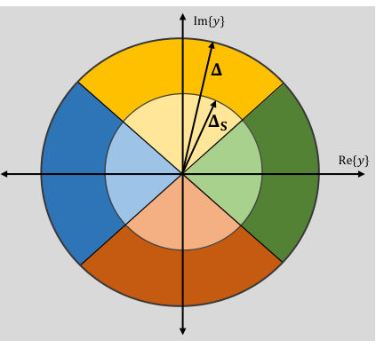
<figcaption class="paper-figure-caption"><b>Fig 1.</b> Figure 1: Phase space representation of the modulations used by Bob for (a) key distillation and (b) parameter estimation, according to the modulation parameters ∆s and ∆.</figcaption>
</figure>
<figure class="paper-figure-card">
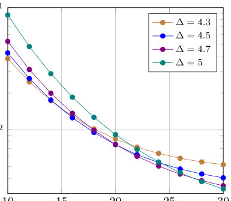
<figcaption class="paper-figure-caption"><b>Fig 2.</b> Figure 2: Dimension reduction penalty ζα with respect to the cutoff size Nc of Bob’s projection and diverse values of the parameter ∆for (a) n = 1010 with transmittance χ = 8 dB, and for (b) n = 108 with transmittance χ = 4 dB. The parameters α, γ, pK and ∆s were optimized for each data point.</figcaption>
</figure>
<figure class="paper-figure-card">
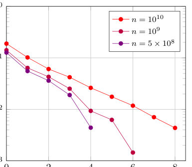
<figcaption class="paper-figure-caption"><b>Fig 3.</b> Figure 3: (a) Dimension reduction penalty ζα with respect to the channel transmittance for diverse values of the block size n. These values lead to the (b) finite-size key rates against the total transmittance χ for different block sizes. We use a dimension reduction with Nc = 20, a modulation of ∆= 4.7, and reconciliation efficiency β = 95%. The parameters α, γ, pK and ∆s were optimized for each data point.</figcaption>
</figure>
</div>

<p><strong>Summary.</strong> The paper presents a robust finite-size security analysis for discrete-modulated CVQKD protocols. It overcomes limitations of previous proofs by integrating dimension reduction and using the MEAT framework. The results confirm positive key rates for realistic block sizes, advancing the field toward practical quantum communication.</p>
<p><strong>Why it may be interesting.</strong> This work provides advanced theoretical tools for quantifying security in practical quantum communication systems, which is crucial for realizing scalable quantum networks.</p>
<details>
<summary>Detailed structure</summary>
<p><strong>Main problem.</strong> The work develops a finite-size security analysis for discrete-modulated continuous variable Quantum Key Distribution (CVQKD) protocols under general attacks.</p>
<p><strong>Main result.</strong> Positive key rates are reported in the finite-size regime for relevant block sizes on the order of $10^8$, successfully bridging the gap between theoretical proofs and practical implementations.</p>
<p><strong>Method.</strong> The security analysis combines dimension reduction, a proof based on the Marginal-Constrained Entropy Accumulation Theorem (MEAT), and modeling receiver imperfections using a trusted detector model.</p>
<p><strong>Model / system.</strong> The system is CVQKD utilizing discrete modulations of coherent states, modeled by discretizing phase space measurements into finite registers ($Z_j$). The analysis framework extends established quantum information security metrics ($\epsilon$-security).</p>
<p><strong>Key observables.</strong> Secret key rate (bits/pulse), dimension reduction penalty ($\zeta_\alpha$), and the final achievable key length $\ell$.</p>
<p><strong>Important parameters / regimes.</strong> Block sizes ($n \sim 10^8$ to $10^{10}$), modulation parameters ($\Delta, \Delta_s$), detection efficiency ($\eta_d$), and reconciliation efficiency ($eta$).</p>
<p><strong>Assumptions / limitations.</strong> The analysis relies on continuity bounds to justify dimension reduction from infinite-dimensional states to finite subspaces, and uses the MEAT framework.</p>
<p><strong>Figures summary.</strong> Figures illustrate the phase space representation of modulations (Figure 1) and show the dependence of the dimension reduction penalty ($\zeta_\alpha$) and the final finite-size secret key rates on channel transmittance ($\chi$) for various block sizes.</p>
<p><strong>Paper structure.</strong> The paper progresses by first defining the discrete protocol, formalizing security using $\epsilon$-security metrics, developing mathematical tools like concentration inequalities, and finally applying MEAT combined with dimension reduction to derive a rigorous lower bound on the secret key rate.</p>
</details>
<details>
<summary>Abstract</summary>
<p>Continuous variable quantum key distribution via discrete modulations ensures information-theoretic security using standard telecom technologies, providing affordable and scalable quantum communications with simplified classical postprocessing. However, existing security proofs against general attacks often rely on restrictive assumptions, such as a bounded dimension for coherent states, or require impractically large block sizes. In this work, we develop a finite-size security analysis that removes these limitations while incorporating realistic experimental features. Our approach combines the dimension reduction technique, a security proof based on the marginal-constrained entropy accumulation, and a trusted detector model accounting for the receiver imperfections. We report positive key rates in the finite-size regime for relevant block sizes of the order of $10^8$. These results contribute to narrowing the gap between theoretical security proofs and practical implementations of discrete-modulated continuous variable quantum key distribution protocols.</p>
</details>
<p><sub><a href="#top">↑ back to top</a></sub></p>

<p><a id="paper-2606.19551"></a></p>
<h3 id="passive-user-bell-state-loop-back-key-establishment-without-quantum-detectors-at-the-user-nodes"><a href="http://arxiv.org/abs/2606.19551v1">Passive-User Bell-State Loop-Back Key Establishment without Quantum Detectors at the User Nodes</a></h3>
<p><strong>Authors:</strong> Luis Adrián Lizama-Pérez<br>
<strong>Type:</strong> theory · <strong>Category:</strong> quantum information and computing · <strong>PDF:</strong> <a href="https://arxiv.org/pdf/2606.19551v1">https://arxiv.org/pdf/2606.19551v1</a><br>
<strong>Analysis basis:</strong> full PDF text, analyzed in chunks
<strong>Topic relevance:</strong> <code>entanglement &amp; information structure</code> <strong>1/5</strong> · <code>quantum measurements</code> <strong>1/5</strong></p>
<div class="figure-strip-hint">↔ Scroll figures horizontally</div>
<div class="paper-figures-scroll">
<figure class="paper-figure-card">
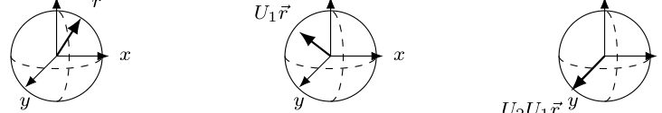
<figcaption class="paper-figure-caption"><b>Fig 1.</b> Figure 1: Conceptual representation of the passive-user Bell-state Loop-Back architecture. The traveling subsystem passes sequentially through B1 and B2, which apply local Pauli operations U1 and U2. The lower panels provide an operator-level visualization of these Pauli operations acting on a test Bloch vector ⃗r. In the actual Bell-state protocol, the traveling subsystem is locally maximally mixed, ρB = I/2, so the physical information is not carried by a local Bloch vector but by the Bell correlations recovered at Alice’s station. The figure illustrates the effective composition Ueff = U2U1, which is the only transformation inferred by Alice from the final Bell-state measurement.</figcaption>
</figure>
<figure class="paper-figure-card">
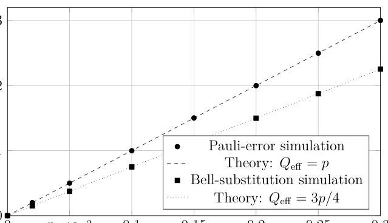
<figcaption class="paper-figure-caption"><b>Fig 2.</b> Figure 2: Effective error rate Qeff as a function of the perturbation probability p under two perturbation models, obtained from Qiskit simulations with the AerSimulator. Markers denote the simulated values for the Pauli-error and Bell-substitution models, respectively. The dashed and dotted lines represent the theoretical behaviors Qeff = p and Qeff = 3p/4. The close overlap between the simulated points and the theoretical curves confirms the consistency of the inference rule under both perturbation models.</figcaption>
</figure>
</div>

<p><strong>Summary.</strong> The paper proposes a Bell-state extension of the Loop-Back QKD protocol to enable secret key establishment between two passive users. By using entangled states and having an active station measure the resulting global Pauli operation ($U_{	ext{eff}}$), the system allows users to derive their private raw keys from the decomposition of $U_{	ext{eff}}$. This advances quantum cryptography by removing the need for complex quantum hardware at the end-user nodes.</p>
<p><strong>Why it may be interesting.</strong> This work is highly relevant as it explores novel quantum communication protocols that circumvent hardware limitations (no detectors/transmitters at user nodes) by leveraging entanglement structure, which has implications for future quantum network architectures.</p>
<details>
<summary>Detailed structure</summary>
<p><strong>Main problem.</strong> The goal is to establish a secret key between two passive users ($B_1$ and $B_2$) without requiring them to possess quantum transmitters or detectors.</p>
<p><strong>Main result.</strong> The protocol successfully transfers the distributed-transformation mechanism of Loop-Back QKD from single qubits to entangled Bell states, allowing for key generation based on the private decomposition of a global Pauli operation.</p>
<p><strong>Method.</strong> It analyzes the effective Pauli operation ($U_{	ext{eff}} = U_2 U_1$) observed by an active station (Alice) after two passive users apply local Pauli operations to a traveling entangled subsystem.</p>
<p><strong>Model / system.</strong> The system uses a Bell-state extension of the Loop-Back QKD architecture. Alice prepares and measures Bell pairs, while $B_1$ and $B_2$ act as passive modulators applying local Pauli gates ($U_1, U_2$).</p>
<p><strong>Key observables.</strong> The effective Pauli operation ($U_{	ext{eff}}$) measured by Alice; the private local operations ($U_1, U_2$) known only to $B_1$ and $B_2$.</p>
<p><strong>Important parameters / regimes.</strong> The success probability of the Bell-state measurement ($p_{	ext{BSM}}$); the effective error rate ($Q_{	ext{eff}}$) under various attack models.</p>
<p><strong>Assumptions / limitations.</strong> The protocol assumes that individual local operations remain algebraically hidden from Alice, and security relies on non-colluding users and physical characterization of components (not device-independent).</p>
<p><strong>Figures summary.</strong> Figures conceptually illustrate the path $A 	o B_1 	o B_2 	o A$ showing how local operations compose to form $U_{	ext{eff}} = U_2 U_1$. Tables summarize ideal rounds and quantify error rates under different noise models.</p>
<p><strong>Paper structure.</strong> The paper introduces the Bell-state extension, analyzes the algebraic structure of the effective operation ($U_{	ext{eff}}$), derives key inference rules for users based on $U_{	ext{eff}}$, discusses security against attacks (like separable substitutions), and concludes with generalizations to multi-user settings.</p>
</details>
<details>
<summary>Abstract</summary>
<p>We propose and analyze a Bell-state extension of the Loop-Back quantum key distribution architecture for secret-key establishment between two passive users that do not require quantum transmitters or quantum detectors. In the proposed setting, a single active station, Alice, provides the entangled-state infrastructure, retains one qubit of an initially prepared Bell pair, and sends the traveling subsystem through two passive users, denoted by $B_1$ and $B_2$. Each passive user applies a local Pauli operation to the same traveling subsystem, so that the operation observed by Alice is only the effective composition $U_{\mathrm{eff}}=U_2U_1$. After the subsystem returns, Alice performs a Bell-state measurement and, using her private knowledge of the initial Bell state, deterministically identifies the effective Pauli operation. However, the individual factors $U_1$ and $U_2$ remain algebraically hidden from Alice whenever the local choices are uniformly and independently selected. The public effective operation acts as a parity-like constraint: each passive user can infer the operation applied by the other from its own private choice, while the active station learns only the global composition. This construction transfers the essential distributed-transformation mechanism of passive-user Loop-Back QKD to the entangled-state regime. Unlike single-qubit passive-user schemes, whose useful events are intrinsically post-selected, the Bell-state version is limited primarily by the success probability of the Bell-state measurement. We discuss the algebraic structure of the protocol, its interpretation as an infrastructure-assisted mediated key-establishment mechanism, and the physical assumptions required to protect passive Pauli modulators against active injection or Trojan-horse-type attacks.</p>
</details>
<p><sub><a href="#top">↑ back to top</a></sub></p>

<p><a id="paper-2606.20402"></a></p>
<h3 id="quantum-kernels-are-spectral-tensor-networks"><a href="http://arxiv.org/abs/2606.20402v1">Quantum Kernels are Spectral Tensor Networks</a></h3>
<p><strong>Authors:</strong> Erik M. Åsgrim, Stefano Markidis<br>
<strong>Type:</strong> theory · <strong>Category:</strong> numerical methods · <strong>PDF:</strong> <a href="https://arxiv.org/pdf/2606.20402v1">https://arxiv.org/pdf/2606.20402v1</a><br>
<strong>Analysis basis:</strong> full PDF text, analyzed in chunks
<strong>Topic relevance:</strong> <code>entanglement &amp; information structure</code> <strong>1/5</strong> · <code>methods for driven-dissipative</code> <strong>1/5</strong></p>
<div class="figure-strip-hint">↔ Scroll figures horizontally</div>
<div class="paper-figures-scroll">
<figure class="paper-figure-card">
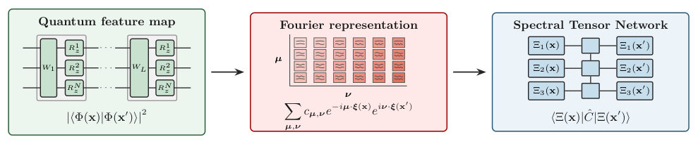
<figcaption class="paper-figure-caption"><b>Fig 1.</b> Figure 1. From quantum feature maps to spectral tensor networks. A quantum feature map induces a kernel with Fourier coefficients cµ,ν that encode its spectral structure. Representing this Fourier coefficient object as a matrix product operator yields the spectral tensor network contraction ⟨Ξ(x)| ˆC|Ξ(x′)⟩.</figcaption>
</figure>
<figure class="paper-figure-card">
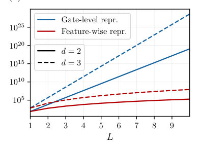
<figcaption class="paper-figure-caption"><b>Fig 2.</b> Figure 2. Reduction from gate-level to feature-wise frequen- cies. (a) Gate-level spectral tensor network with ˆCµ,ν = cµ,ν. (b) Grouping degenerate gate-level configurations yields the feature-wise coefficients ˜cω,ω′, with ˆCω,ω′ = ˜cω,ω′. (c) Num- ber of Fourier coefficients in the gate-level and feature-wise representations, scaling as 32dL and (2L + 1)2d, respectively, for layered feature maps with one upload per feature in each of the L layers.</figcaption>
</figure>
<figure class="paper-figure-card">
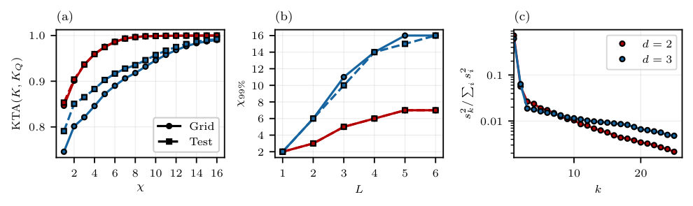
<figcaption class="paper-figure-caption"><b>Fig 3.</b> Figure 3. Spectral compressibility of quantum kernels. (a) Kernel target alignment between the quantum kernel and its spectral tensor network representation as a function of MPO bond dimension χ for L = 6, showing rapid convergence toward unity on both the frequency-resolving grid and independently sampled test points. (b) Minimum bond dimension χ99% required to reach average alignment above 0.99 as a function of depth L. (c) Operator Schmidt spectrum of the Fourier coefficient tensor across the first bond for the L = 6, χ = 16 case. The rapid decay of the normalized weights s2 k/ P</figcaption>
</figure>
</div>

<p><strong>Summary.</strong> This paper proves that quantum kernels can be mathematically recast as spectral tensor networks by analyzing their Fourier representations. It introduces Kernel Target Alignment (KTA) and measures the resulting 'spectral compressibility' using bond dimensions. This provides a diagnostic tool to determine if evaluating a quantum kernel is likely to remain classically tractable.</p>
<p><strong>Why it may be interesting.</strong> It provides a powerful mathematical tool (tensor networks) to analyze quantum information processing tasks (kernel methods), offering a concrete measure of when quantum computation might be classically simulable.</p>
<details>
<summary>Detailed structure</summary>
<p><strong>Main problem.</strong> The core problem is identifying quantum kernels, derived from feature maps, as spectral tensor networks to understand their computational complexity.</p>
<p><strong>Main result.</strong> Quantum kernels can be exactly represented by spectral tensor networks, and the compressibility of their Fourier coefficient tensors serves as a diagnostic for classical tractability.</p>
<p><strong>Method.</strong> The authors use Fourier analysis to decompose quantum kernels into coefficients ($  ilde{c}_{\omega,\omega'}$), which are then mapped onto Matrix Product Operator (MPO) factorizations characteristic of spectral tensor networks.</p>
<p><strong>Model / system.</strong> The model involves quantum feature states $|\Phi(x)
angle$ generated by layered data-encoding quantum circuits. The kernel is $\kappa(x, x') = |\langle\Phi(x)|\Phi(x')
angle|^2$.</p>
<p><strong>Key observables.</strong> Spectral compressibility (rank structure of Fourier coefficients), Bond Dimension ($\chi$), and Kernel Target Alignment (KTA).</p>
<p><strong>Important parameters / regimes.</strong> Bond dimension ($\chi$), circuit depth ($L$), and the frequency-resolving grid ($\mathcal{G}\Omega$).</p>
<p><strong>Assumptions / limitations.</strong> The analysis relies on assuming a specific structure for data-encoding gates and utilizing the approximation that KTA simplifies to the Frobenius cosine similarity on a frequency-resolving grid.</p>
<p><strong>Figures summary.</strong> Figures illustrate the transition from quantum feature maps to spectral tensor networks using $\hat{C}$, compare gate-level vs. feature-wise scaling, and show KTA converging to unity as bond dimension increases.</p>
<p><strong>Paper structure.</strong> The paper proceeds by establishing identities linking Fourier expansions to ETK contractions, deriving a compact grouped Fourier form, defining KTA as the bridge metric, and finally using numerical experiments to demonstrate spectral compressibility diagnostics.</p>
</details>
<details>
<summary>Abstract</summary>
<p>Quantum kernels admit Fourier representations whose frequencies are determined by the data-encoding gates of the underlying feature map. We show that entangling tensor kernels are matrix product operator factorizations of the corresponding Fourier coefficient tensors, thereby identifying quantum kernels as spectral tensor networks. By grouping gate-level frequency configurations that yield the same feature-wise frequency, we obtain a grouped Fourier form that induces a more compact spectral tensor network representation of the kernel. We further show that kernel target alignment serves as a bridge between the Fourier and tensor network views. On a grid that resolves the accessible Fourier modes, it becomes the Frobenius cosine similarity between Fourier coefficient tensors. Our numerical experiments show that layered quantum kernels admit accurate representations with small bond dimension, revealing a compressibility governed by correlations between Fourier modes. This compressibility provides a diagnostic of classical representability and of whether kernel evaluation is likely to remain classically tractable.</p>
</details>
<p><sub><a href="#top">↑ back to top</a></sub></p>

<p><a id="paper-2606.19628"></a></p>
<h3 id="subsystem-quantum-error-correction-for-noisy-quantum-metrology"><a href="http://arxiv.org/abs/2606.19628v1">Subsystem Quantum Error Correction for Noisy Quantum Metrology</a></h3>
<p><strong>Authors:</strong> Qiushi Liu, Sisi Zhou<br>
<strong>Type:</strong> theory · <strong>Category:</strong> quantum information and computing · <strong>PDF:</strong> <a href="https://arxiv.org/pdf/2606.19628v1">https://arxiv.org/pdf/2606.19628v1</a><br>
<strong>Analysis basis:</strong> full PDF text, analyzed in chunks
<strong>Topic relevance:</strong> <code>entanglement &amp; information structure</code> <strong>1/5</strong> · <code>quantum measurements</code> <strong>1/5</strong></p>
<div class="figure-strip-hint">↔ Scroll figures horizontally</div>
<div class="paper-figures-scroll">
<figure class="paper-figure-card">
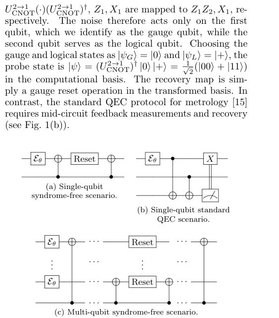
<figcaption class="paper-figure-caption"><b>Fig 1.</b> FIG. 1. Circuit diagram for one step of QEC in phase estima- tion under bit flip noise. In (a) and (c), the reset operation converts the state back to |0⟩. The qubit on the last line represents the noiseless ancillary qubit, serving as the logical qubit. The qubits above it are gauge qubits. In (b), the state of the first two qubits is (|00⟩+ |11⟩)/ √</figcaption>
</figure>
<figure class="paper-figure-card">
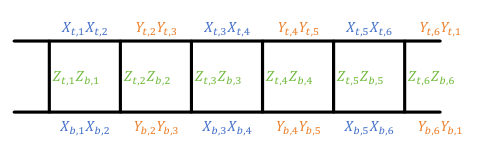
<figcaption class="paper-figure-caption"><b>Fig 2.</b> FIG. 2. Ladder code architecture (for np = 6). Qubits lie on the vertices and check operators on two neighboring qubits are measured.</figcaption>
</figure>
</div>

<p><strong>Summary.</strong> This work develops theoretical frameworks to achieve Heisenberg Limit scaling in quantum metrology by employing subsystem Quantum Error Correction (QEC). It demonstrates that these codes simplify protocols significantly compared to standard QEC by allowing noise absorption into gauge degrees of freedom. The key achievement is showing how this approach can maintain coherent logical evolution even for time-dependent signals using syndrome-free methods.</p>
<p><strong>Why it may be interesting.</strong> The focus on resource-efficient QEC for metrology is highly relevant. By showing how gauge degrees of freedom can absorb noise while preserving the logical signal coherence, it suggests practical pathways for implementing high-precision quantum sensors using current hardware capabilities.</p>
<details>
<summary>Detailed structure</summary>
<p><strong>Main problem.</strong> To enhance quantum metrology precision beyond classical limits by suppressing noise using Quantum Error Correction (QEC) techniques.</p>
<p><strong>Main result.</strong> Subsystem error correction provides a resource-efficient method to achieve the Heisenberg Limit, even for time-dependent signals, by protecting only the coherent logical evolution rather than the entire state.</p>
<p><strong>Method.</strong> The authors derive effective Hamiltonian dynamics ($    ext{Heff}$) governing the logical evolution within the code space, utilizing subsystem stabilizer codes and syndrome-free protocols.</p>
<p><strong>Model / system.</strong> The system involves estimating an unknown parameter $   heta$ via noisy quantum channels. The theoretical framework uses subsystem stabilizer codes (e.g., ladder codes) to encode information into a logical subspace protected from noise absorbed by gauge degrees of freedom.</p>
<p><strong>Key observables.</strong> Quantum Fisher Information ($  ext{QFI}$), which must scale as $N^2$ for the Heisenberg Limit; the effective Hamiltonian ($H_{	ext{eff}}$).</p>
<p><strong>Important parameters / regimes.</strong> The number of queries ($N$), the error rate ($p$), and the structure of the noise operators $\{E_i\}$ relative to the signal Hamiltonian $H$.</p>
<p><strong>Assumptions / limitations.</strong> The analysis assumes low error rates for successful decoding, and that the logical evolution can be approximated by an effective unitary dynamics within the code space.</p>
<p><strong>Figures summary.</strong> Figures illustrate QEC circuits for phase estimation, showing syndrome-free vs. standard methods; Figure 2 shows the ladder code architecture; Algorithm 1 details the Floquet code metrology protocol steps.</p>
<p><strong>Paper structure.</strong> The paper progresses from establishing the need for subsystem codes over full QEC (Chunk 1), detailing protocols for time-dependent signals using the ladder code (Chunk 2), deriving effective dynamics for both standard and subsystem codes (Chunk 4), generalizing the formalism to arbitrary Pauli generators via symplectic methods (Chunk 5), and finally proving HL achievability with syndrome-free, ancilla-less techniques (Chunk 6).</p>
</details>
<details>
<summary>Abstract</summary>
<p>Quantum error correction has been successfully applied to enhance the precision of parameter estimation in the presence of noise. Nonetheless, existing methods require a number of noiseless, controllable ancillae and lack efficient encoding and decoding procedures. In this Letter, we demonstrate that subsystem error correction provides a new direction that can substantially simplify the metrological protocol. We derive general conditions under which subsystem stabilizer codes achieve the Heisenberg limit and show that, for broad classes of noise, this can be realized by syndrome-free protocols using at most a single ancilla qubit. Furthermore, we extend this framework to dynamical error correction and show that Floquet codes can protect time-dependent metrological signals in reaching the Heisenberg limit.</p>
</details>
<p><sub><a href="#top">↑ back to top</a></sub></p>

<p><a id="paper-2606.20522"></a></p>
<h3 id="transfer-matrix-functions-for-algebraically-decaying-interactions-in-variational-infinite-matrix-product-states"><a href="http://arxiv.org/abs/2606.20522v1">Transfer-matrix functions for algebraically decaying interactions in variational infinite matrix product states</a></h3>
<p><strong>Authors:</strong> Qi Yang<br>
<strong>Type:</strong> theory · <strong>Category:</strong> strongly correlated electrons · <strong>PDF:</strong> <a href="https://arxiv.org/pdf/2606.20522v1">https://arxiv.org/pdf/2606.20522v1</a><br>
<strong>Analysis basis:</strong> full PDF text, analyzed in chunks
<strong>Topic relevance:</strong> <code>analog quantum simulation</code> <strong>1/5</strong> · <code>methods for driven-dissipative</code> <strong>1/5</strong></p>
<div class="figure-strip-hint">↔ Scroll figures horizontally</div>
<div class="paper-figures-scroll">
<figure class="paper-figure-card">
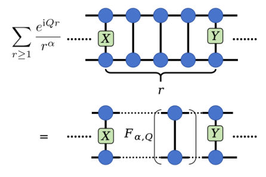
<figcaption class="paper-figure-caption"><b>Fig 1.</b> FIG. 1. Tail summation with transfer matrix function. The connected algebraic tail is evaluated by applying Fα,Q [Eq. (1)] directly to the connected transfer matrix eTA, rather than by first fitting the tail with a finite-pole MPO representation.</figcaption>
</figure>
<figure class="paper-figure-card">
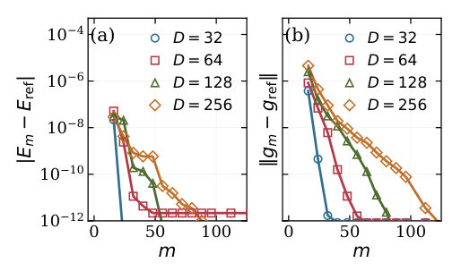
<figcaption class="paper-figure-caption"><b>Fig 2.</b> FIG. 2. Accuracy versus Krylov dimension m for converged finite-D iMPS of the nonoscillatory infinite Haldane–Shastry model, with D = 32, 64, 128, 256. Reference values Eref and gref are fixed-MPS large-m references from the converged mref = 512 calculation; Eref is independently certified by direct real-space summation (Sec. II). (a) Energy error. (b) Projected-gradient error norm.</figcaption>
</figure>
<figure class="paper-figure-card">
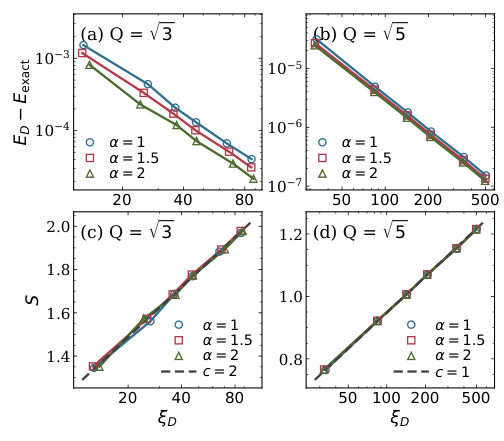
<figcaption class="paper-figure-caption"><b>Fig 3.</b> FIG. 3. Long-range free-fermion string-channel benchmark. All panels use a logarithmic horizontal axis for ξ with D ranging from 16 to 128. (a,b) E(Dξ) −Eexact relative to the exact thermodynamic reference. (c,d) Entropy scaling for Q = √</figcaption>
</figure>
<figure class="paper-figure-card">
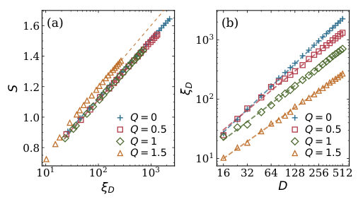
<figcaption class="paper-figure-caption"><b>Fig 4.</b> FIG. 5. Finite-entanglement scaling for Eq. (15) at α = 2. (a) Entanglement entropy S versus ξD for Q = 0, 0.5, 1, 1.5, with log-linear fits capped at D ≤512. (b) Correlation length ξD versus bond dimension D on logarithmic axes, using the same D ≤512 window.</figcaption>
</figure>
<figure class="paper-figure-card">
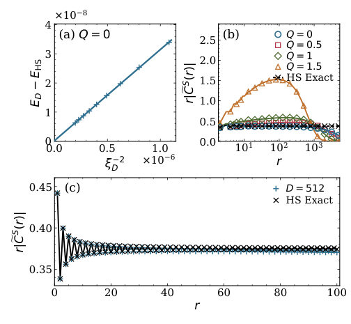
<figcaption class="paper-figure-caption"><b>Fig 5.</b> FIG. 4. Inverse-square Heisenberg energy and correlator bench- marks. (a) Q = 0 Haldane–Shastry energy residual versus ξ−2 D ; the fit uses D = 256–512. (b) Normalized connected spin-vector correlators eCS Q(r) = ⟨⃗S0 · ⃗Sr⟩c at D = 512 for Q = 0, 0.5, 1, 1.5; the dashed guide is the HS exact reference. (c) Direct Q = 0 pointwise comparison of r| eCS(r)| against the exact spin-vector HS result | eCS HS(r)| = 3 Si(πr)/(4πr).</figcaption>
</figure>
</div>

<p><strong>Summary.</strong> The paper introduces a robust method to calculate variational energies for infinite Matrix Product States when the underlying Hamiltonian has algebraically decaying interactions. By reformulating the tail summation as a matrix function evaluated via Krylov methods, it bypasses the need for artificial finite-pole approximations common in existing techniques. This advancement allows for accurate study of critical phenomena and long-range physics in 1D quantum materials.</p>
<p><strong>Why it may be interesting.</strong> This work provides a rigorous, systematic way to handle long-range physics in 1D quantum systems using tensor networks, which is crucial for modeling materials where interactions decay slowly (e.g., dipolar systems or RKKY coupling).</p>
<details>
<summary>Detailed structure</summary>
<p><strong>Main problem.</strong> The primary challenge is developing variational energy calculations for infinite Matrix Product States (iMPS) when the target Hamiltonian features algebraically decaying interactions, while avoiding artificial approximations.</p>
<p><strong>Main result.</strong> A novel transfer-matrix-function formulation allows direct summation of algebraic tails, preserving correct critical signatures that are lost when using standard finite-pole exponential surrogates.</p>
<p><strong>Method.</strong> The method involves calculating the variational energy by representing the algebraic tail via a matrix function $F_{\alpha,Q}(\widetilde{T}_A)$ and evaluating this action using a Krylov subspace projection combined with Fréchet adjoint differentiation for stable gradients.</p>
<p><strong>Model / system.</strong> The work applies to one-dimensional quantum systems with long-range interactions, such as inverse-square spin chains (Haldane–Shastry model) and general algebraic tails $J(r) \propto 1/r^\alpha$.</p>
<p><strong>Key observables.</strong> Variational energy, correlation length ($\xi_D$), connected correlators $\langle\vec{S}_0 \cdot \vec{S}_r
angle_c$, and critical diagnostics.</p>
<p><strong>Important parameters / regimes.</strong> Bond dimension ($D$) of the MPS, Krylov subspace dimension ($m$), algebraic decay exponent ($\alpha$), and interaction coupling constants ($Q$).</p>
<p><strong>Assumptions / limitations.</strong> The method assumes a unique dominant fixed point for defining the connected transfer matrix $e^{TA}$, and the accuracy is controlled by the choice of Krylov dimension $m$.</p>
<p><strong>Figures summary.</strong> Figures demonstrate that moderate Krylov dimensions stabilize energy calculations for the Haldane–Shastry model, show convergence to exact thermodynamic limits for free fermions, and critically illustrate that the matrix-function approach maintains correct critical behavior where finite-pole approximations fail.</p>
<p><strong>Paper structure.</strong> The paper first introduces the problem of algebraic tails in iMPS. It then details the transfer-matrix-function formulation using Krylov methods and gradient techniques. Benchmarks are presented across several models (free fermions, Heisenberg chain, Ising chain) to validate the method's stability and accuracy against known limits.</p>
</details>
<details>
<summary>Abstract</summary>
<p>Variational infinite matrix product state (iMPS) calculations usually make Hamiltonians with algebraically decaying interactions compatible with standard MPO algorithms by first replacing the target Hamiltonian with a finite-pole sum-of-exponentials surrogate, thereby introducing a Hamiltonian-representation residual. We formulate the fixed-$D$ variational energy without introducing such a surrogate. For a fixed finite-$D$ MPS, the algebraic tail can be summed directly through the connected transfer matrix: the tail $e^{\mathrm{i} Qr}/r^α$ is represented by the matrix function $F_{α,Q}(\widetilde{T}_A)$, with $F_{α,Q}(z)=\operatorname{Li}_α(e^{\mathrm{i} Q}\,z)/z$. We evaluate the resulting matrix-function action using a Krylov method and obtain stable gradients by combining a Fréchet adjoint with implicit fixed-point differentiation. Benchmarks on long-range free fermions and the inverse-square Heisenberg family, including the Haldane--Shastry point, validate the transfer-matrix-function formulation. A long-range Ising-chain calculation illustrates a practical consequence of avoiding a finite-pole Hamiltonian representation. At a fixed, independently known critical field, finite-pole surrogate Hamiltonians can bias a critical diagnostic away from criticality, whereas the matrix-function calculation retains the expected critical signatures of the target algebraic Hamiltonian.</p>
</details>
<p><sub><a href="#top">↑ back to top</a></sub></p>

<p><a id="paper-2606.20017"></a></p>
<h3 id="all-valid-state-hobo-encoding-for-constrained-combinatorial-optimization-on-nisq-devices"><a href="http://arxiv.org/abs/2606.20017v1">All-valid-state HOBO encoding for constrained combinatorial optimization on NISQ devices</a></h3>
<p><strong>Authors:</strong> Juncheng Wang, Takumi Kanezashi, Daisuke Tsukayama, Koki Awaya, Reo Saito, Jun-ichi Shirakashi, Tetsuo Shibuya, Hiroshi Imai<br>
<strong>Type:</strong> both · <strong>Category:</strong> quantum information and computing · <strong>PDF:</strong> <a href="https://arxiv.org/pdf/2606.20017v1">https://arxiv.org/pdf/2606.20017v1</a><br>
<strong>Analysis basis:</strong> full PDF text, analyzed in chunks
<strong>Topic relevance:</strong> <code>QC/QI experiment</code> <strong>1/5</strong></p>
<div class="figure-strip-hint">↔ Scroll figures horizontally</div>
<div class="paper-figures-scroll">
<figure class="paper-figure-card">
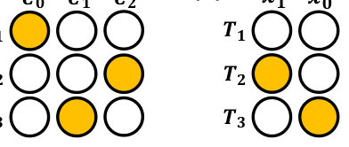
<figcaption class="paper-figure-caption"><b>Fig 1.</b> FIG. 1. Hamiltonian construction method. (a) One possible route for a 3-city TSP. (b) Mapping rule from the TSP to qubits. (c) QUBO encoding and (d) HOBO encoding for the tour in (a). In the QUBO encoding, each qubit corresponds to a city index, whereas in the HOBO encoding, the binary string formed by all qubits at each time step represents a city index. Filled and open circles denote 1 and 0, respectively.</figcaption>
</figure>
<figure class="paper-figure-card">
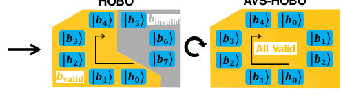
<figcaption class="paper-figure-caption"><b>Fig 2.</b> FIG. 2. Cyclic mapping used in AVS-HOBO to replace the constraint term HHOBO valid . Here, n is the number of qubits; n = 3 can generate 8 distinct states. bi denotes the city index. In this figure, we illustrate the case of 5 cities. bvalid denotes valid states, whereas binvalid denotes unusable states.</figcaption>
</figure>
<figure class="paper-figure-card">
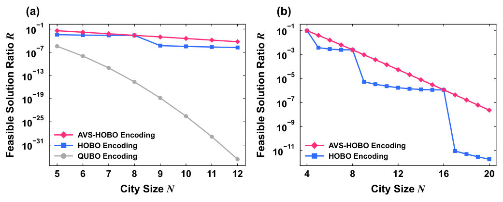
<figcaption class="paper-figure-caption"><b>Fig 3.</b> FIG. 3. Ratio of feasible states in the Hilbert space for different encoding methods, where feasible states are those that satisfy both TSP constraints. (a) Comparison among AVS-HOBO, HOBO, and QUBO encodings for TSP sizes up to 12 cities. The number of feasible states in QUBO differs significantly from that in HOBO, and for 12 cities, the ratio is already close to zero. (b) As the number of cities is further increased, the advantage of AVS-HOBO over HOBO becomes more evident.</figcaption>
</figure>
<figure class="paper-figure-card">
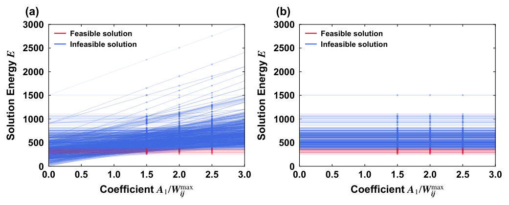
<figcaption class="paper-figure-caption"><b>Fig 4.</b> FIG. 4. Solution energy landscape. (a) Results obtained using the original HOBO method. The horizontal axis shows the coefficient A1/W max ij , which represents the strength of the constraint penalty. Although the original problem formulation contains two constraint terms, here we focus on the optimized term A1. As can be seen in the figure, as the constraint penalty becomes stronger, the energies of feasible solutions remain unchanged because they incur no penalty, whereas the energies of infeasible solutions increase accordingly. This enlarges the energy gaps and can make the energy exploration process more difficult and slower. (b) Results obtained using the AVS-HOBO method. Because this...</figcaption>
</figure>
<figure class="paper-figure-card">
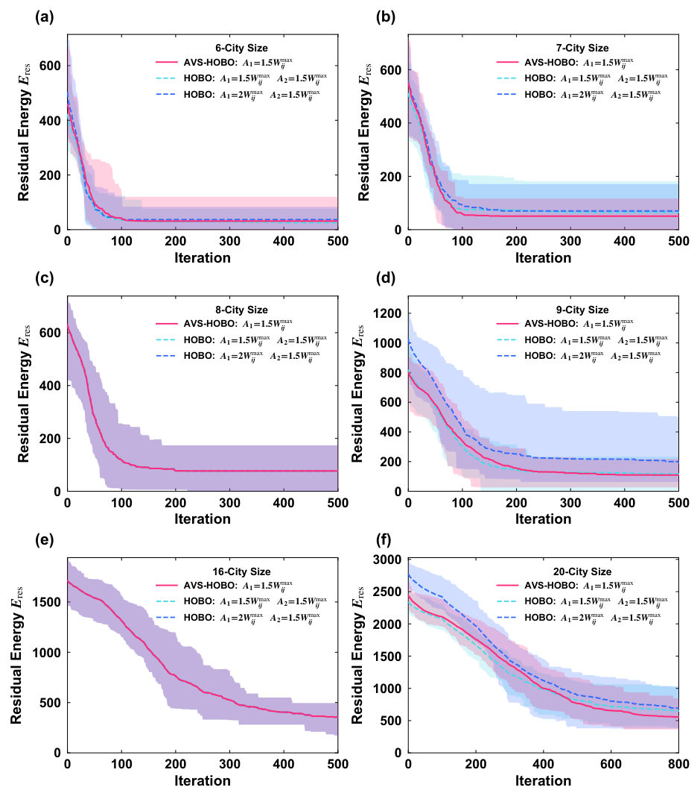
<figcaption class="paper-figure-caption"><b>Fig 5.</b> FIG. 5. Relationship between the residual energy and the iteration number for the TSP. The figure shows the residual energies of 20 different instances under three different conditions for each problem size: (a) 6-city size; (b) 7-city size; (c) 8-city size; (d) 9-city size; (e) 16-city size; and (f) 20-city size. In the figure, both the solid and dashed lines represent the average values over 20 different instances for the corresponding methods, while the shaded area represents the min-max range determined by the maximum and minimum values among the different instances.</figcaption>
</figure>
</div>

<p><strong>Summary.</strong> This paper improves the formulation of constrained combinatorial optimization problems like TSP for NISQ devices by introducing the AVS-HOBO encoding. It uses VQE on simulated and real quantum hardware to demonstrate that AVS-HOBO significantly enhances solution feasibility and stability compared to existing methods. This work advances the practical viability of quantum computing for complex, real-world optimization tasks.</p>
<p><strong>Why it may be interesting.</strong> It provides a concrete, near-term application of quantum algorithms to NP-hard optimization problems, directly comparing encoding efficiency and robustness against realistic noise models relevant for current quantum hardware development.</p>
<details>
<summary>Detailed structure</summary>
<p><strong>Main problem.</strong> The study addresses constrained combinatorial optimization problems, specifically formulating and solving the Traveling Salesperson Problem (TSP) using quantum computation.</p>
<p><strong>Main result.</strong> The proposed All-valid-state HOBO (AVS-HOBO) encoding significantly enhances the practical reliability and scalability of VQE for TSP on NISQ devices compared to standard HOBO or QUBO encodings.</p>
<p><strong>Method.</strong> The core method is using the Variational Quantum Eigensolver (VQE) algorithm, which minimizes the expectation value of a problem Hamiltonian constructed via specialized binary encoding schemes.</p>
<p><strong>Model / system.</strong> The model involves mapping the TSP to an Ising/Hamiltonian form. The system utilizes VQE on simulated and real NISQ quantum hardware, comparing QUBO, HOBO, and AVS-HOBO encodings.</p>
<p><strong>Key observables.</strong> Energy convergence behavior, Approximation Ratio (AR), Length Ratio (LR), Feasibility Ratio (FR), and Residual Energy ($   ext{Eres}$).</p>
<p><strong>Important parameters / regimes.</strong> TSP instances up to 20 cities; penalty coefficients ($A$); error mitigation techniques like Matrix-free measurement mitigation ($   ext{Mthree}$) and Dynamical Decoupling ($  ext{DD}$).</p>
<p><strong>Assumptions / limitations.</strong> The analysis assumes the applicability of VQE on NISQ devices, acknowledging that hardware noise degrades performance but AVS-HOBO mitigates this better.</p>
<p><strong>Figures summary.</strong> Figures compare convergence (Eres) and solution quality metrics (AR, LR, FR) across different encoding schemes (HOBO vs. AVS-HOBO) for increasing TSP sizes, showing AVS-HOBO's superior stability.</p>
<p><strong>Paper structure.</strong> The paper introduces the problem (TSP), compares QUBO/HOBO encodings, details the novel AVS-HOBO scheme using cyclic mapping, and validates its performance through extensive simulations and tests on real quantum hardware while analyzing error mitigation effects.</p>
</details>
<details>
<summary>Abstract</summary>
<p>Continued advancements in quantum computing have stimulated growing interest in translating quantum technologies into real-world applications. Consequently, the investigation of practically motivated NP-hard problems is of significant value. This study investigates the performance of a variational quantum eigensolver (VQE) in addressing the traveling salesperson problem (TSP) through noiseless simulations representative of noisy intermediate-scale quantum (NISQ) devices using higher-order binary optimization (HOBO) encodings. We construct a HOBO Hamiltonian with an efficient binary representation and propose an all-valid-state HOBO (AVS-HOBO) scheme based on cyclic mapping that eliminates one penalty term and reuses states that would otherwise be invalid. Using TSP instances of up to 20 cities, we compare the original HOBO and AVS-HOBO encodings from multiple perspectives, including the energy convergence behavior and the approximation, tour-length, and feasibility ratios. In addition to simulations, we perform computations on real quantum hardware with different device architectures, where we not only compare the performances of different chips but also investigate the effects of different error-mitigation methods on actual quantum machines. The results indicate that AVS-HOBO encoding enhances the practical reliability of VQE on NISQ devices and improves scalability for larger TSP instances, with broader applicability to constrained quantum optimization problems.</p>
</details>
<p><sub><a href="#top">↑ back to top</a></sub></p>

<p><a id="paper-2606.20513"></a></p>
<h3 id="approximating-optimal-decoding-of-quantum-ldpc-codes-with-narrow-frontiers"><a href="http://arxiv.org/abs/2606.20513v1">Approximating optimal decoding of quantum LDPC codes with narrow frontiers</a></h3>
<p><strong>Authors:</strong> Anthony Leverrier, Rüdiger Urbanke<br>
<strong>Type:</strong> theory · <strong>Category:</strong> quantum information and computing · <strong>PDF:</strong> <a href="https://arxiv.org/pdf/2606.20513v1">https://arxiv.org/pdf/2606.20513v1</a><br>
<strong>Analysis basis:</strong> full PDF text, analyzed in chunks
<strong>Topic relevance:</strong> <code>methods for driven-dissipative</code> <strong>1/5</strong></p>
<div class="figure-strip-hint">↔ Scroll figures horizontally</div>
<div class="paper-figures-scroll">
<figure class="paper-figure-card">
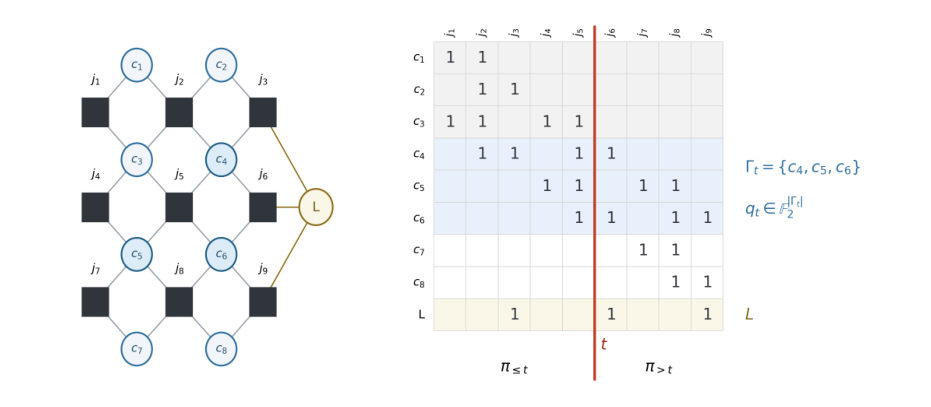
<figcaption class="paper-figure-caption"><b>Fig 1.</b> Figure 1: Standard surface-code factor model and its ordered-matrix representation. Left: one CSS side of a small planar surface-code patch, with local factors xji, bulk checks of degree four, boundary checks of degree two, and one logical-label row L. Right: the same incidence pattern written as the ordered matrix H, with columns in the order π = (j1, . . . , jn). After step t, the processed columns are π≤t, the unprocessed columns are π&gt;t, and the active check set Γt is exactly the set of blue rows, namely the rows touching both sides of the cut. The active residual qt = sΓt ⊕HΓt,π≤tx≤t ∈F|Γt| 2 is therefore a vector with one residual syndrome bit for each blue row; the decoder stores qt...</figcaption>
</figure>
<figure class="paper-figure-card">
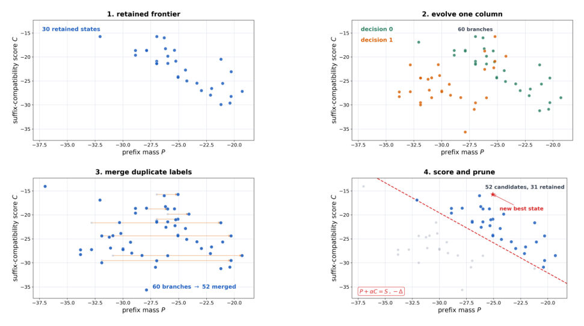
<figcaption class="paper-figure-caption"><b>Fig 2.</b> Figure 2: One transition of the pruned ordered-frontier recursion on a BB code [[72, 12, 6]] under circuit-level noise. Retained states branch on the next binary detector variable, duplicate active-boundary labels are merged by summing their masses, and the merged candidates are scored by S = P + αC before score-gap pruning. In this boundary, the state count changes 30 →60 →52 →31.</figcaption>
</figure>
<figure class="paper-figure-card">
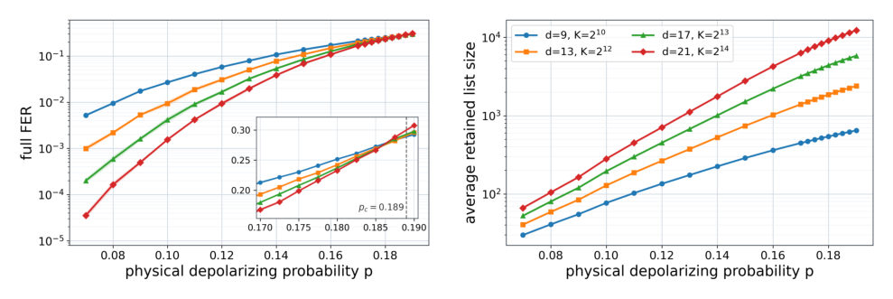
<figcaption class="paper-figure-caption"><b>Fig 3.</b> Figure 3: Rotated-surface code-capacity depolarizing-noise behavior for correlated Pauli Frontier decoding. Left: full FER versus physical depolarizing probability p. The dashed line marks pc = 0.189, the optimal threshold obtained by computing the critical probability of a statistical-mechanics model [39]. Right: average retained list size 1</figcaption>
</figure>
<figure class="paper-figure-card">
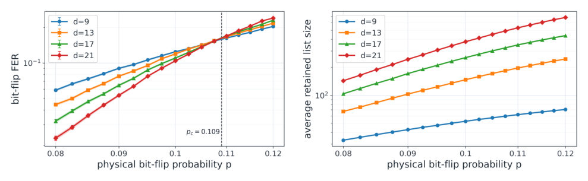
<figcaption class="paper-figure-caption"><b>Fig 4.</b> Figure 4: Hexagonal color-code code-capacity bit-flip benchmark for Frontier decoding. Left: FER versus physical bit-flip probability p. Right: average retained list size, 1</figcaption>
</figure>
<figure class="paper-figure-card">
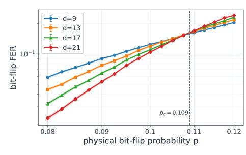
<figcaption class="paper-figure-caption"><b>Fig 5.</b> Figure 5 compares Frontier decoding against correlated minimum-weight perfect matching [6, 7, 41] for the rotated surface code under depolar- izing circuit-level noise at p = 0.002. The plot displays the results for a memory-Z experiment rather than considering both X and Z decod- ing. Each experiment considers d noisy syndrome extraction rounds and reports the corresponding FER per round. It is interesting to fit the per-round logical error rate PL(d) ∝Λ−⌊(d+1)/2⌋ (24)</figcaption>
</figure>
</div>

<p><strong>Summary.</strong> The paper introduces the Frontier decoder, an efficient approximation algorithm designed to solve the computationally hard problem of optimal quantum LDPC decoding. By pruning the state space during a dynamic programming traversal, it achieves near-optimal performance for various quantum error-correcting codes while keeping the computational complexity manageable and low-latency.</p>
<p><strong>Why it may be interesting.</strong> This work provides a highly scalable algorithmic tool for decoding complex quantum error-correcting codes. For AMO physicists working on quantum computation, it offers concrete benchmarks and insights into the feasibility of fault-tolerant quantum memory and processing using structured codes.</p>
<details>
<summary>Detailed structure</summary>
<p><strong>Main problem.</strong> The primary goal is to develop an efficient method for approximating the optimal decoding of quantum Low-Density Parity Check (LDPC) codes.</p>
<p><strong>Main result.</strong> The proposed Frontier decoder achieves state-of-the-art performance, reaching thresholds close to optimal for surface and color codes under various noise models while maintaining a very small average computational overhead.</p>
<p><strong>Method.</strong> It employs a pruned dynamic-programming approach that processes error variables in an ordered sequence, merging states with identical residual syndromes and logical labels while retaining only the most promising 'frontier' of possibilities based on a heuristic score.</p>
<p><strong>Model / system.</strong> The work focuses on quantum error correction using LDPC codes (e.g., surface code, color code). The decoding process is modeled as finding the most probable recovery operation given an observed noisy syndrome record, which involves tracking syndromes and logical labels across variable processing steps.</p>
<p><strong>Key observables.</strong> Full Logical Frame Error Rate (FER), average/peak retained list size ($|F_t|$), and the final maximum log-mass for each possible logical class ($\log bZ(F)_\lambda(s)$).</p>
<p><strong>Important parameters / regimes.</strong> The noise level ($p$), the score gap ($\Delta$), and the hard memory cap ($K$) are crucial parameters controlling the approximation quality versus computational cost.</p>
<p><strong>Assumptions / limitations.</strong> The method approximates exact inference by pruning states based on a heuristic score, which assumes that the best path remains within a narrow frontier. The suffix-compatibility score relies on approximations of row marginals.</p>
<p><strong>Figures summary.</strong> Figures illustrate the decoding process steps (e.g., transition diagrams for BB codes), compare FER vs. noise level ($p$) against other decoders, and analyze computational efficiency metrics like average versus peak retained list sizes and latency tail distributions.</p>
<p><strong>Paper structure.</strong> The paper introduces the Frontier decoder mechanism by detailing its ordered recursion structure, establishing its exactness when unpruned, and then presenting results comparing its performance (thresholds, FER) against established methods for various quantum codes under realistic noise models.</p>
</details>
<details>
<summary>Abstract</summary>
<p>We introduce the Frontier decoder, a pruned dynamic-programming decoder for sparse quantum decoding problems. Frontier processes error variables in a chosen order, merges prefixes with the same residual syndrome and logical label, and approximates logical-coset posterior masses by retaining only a narrow scored frontier. Without pruning, the recursion is exact ordered inference with exponential complexity.   In the code-capacity setting, the decoder reaches thresholds close to optimal for the surface code and the color code. In the circuit-level noise model, it achieves state-of-the-art performance with a very small average retained list size: less than 100 for the gross code $[[144,12,12]]$ at a physical error rate of $0.001$. When the list size is constant, the decoder has linear complexity, suggesting the possibility of low-latency implementations.</p>
</details>
<p><sub><a href="#top">↑ back to top</a></sub></p>

<p><a id="paper-2606.19457"></a></p>
<h3 id="efficient-classical-representation-and-quantum-state-preparation-of-complete-active-space-wavefunctions"><a href="http://arxiv.org/abs/2606.19457v1">Efficient classical representation and quantum state preparation of complete active space wavefunctions</a></h3>
<p><strong>Authors:</strong> Hamza Jnane<br>
<strong>Type:</strong> theory · <strong>Category:</strong> strongly correlated electrons · <strong>PDF:</strong> <a href="https://arxiv.org/pdf/2606.19457v1">https://arxiv.org/pdf/2606.19457v1</a><br>
<strong>Analysis basis:</strong> full PDF text, analyzed in chunks
<strong>Topic relevance:</strong> <code>methods for driven-dissipative</code> <strong>1/5</strong></p>
<div class="figure-strip-hint">↔ Scroll figures horizontally</div>
<div class="paper-figures-scroll">
<figure class="paper-figure-card">

<figcaption class="paper-figure-caption"><b>Fig 1.</b> FIG. 1. A particular walk on a Shavitt graph (red) among all the potential configurations for d = 3 (faded red). Each black node corresponds to a different triplet (a, b, c) and each edge represents a different transition as presented in Table I. For clarity, each δi is associated with an edge with a different angle. For a fixed N and S, all walks start from the root (0, 0, 0) and end at the same node (yellow nodes). For in- stance, for N = 3 and S = 1/2 the final node is (1, 1, 1). The highlighted path (0, 0, 0) →(0, 1, 0) →(0, 2, 0) →(1, 1, 1) corresponds to adding a spin-up electron in the first orbital, followed by a second spin-up electron in the second orbital, and a spin-down...</figcaption>
</figure>
<figure class="paper-figure-card">

<figcaption class="paper-figure-caption"><b>Fig 2.</b> FIG. 2. MPS representation of the expansion coefficient of a state in the UGA basis. Each tensor Aδi i is depicted as a red circle. The physical index δi labels the transition at orbital i, and each virtual index vi encodes the intermediate configuration (ai, bi, ci) of the first i orbitals.</figcaption>
</figure>
<figure class="paper-figure-card">

<figcaption class="paper-figure-caption"><b>Fig 3.</b> FIG. 3. Sequential quantum circuit for preparing an MPS in the UGA basis. At each step, a new 2-qubit physical register is introduced, while the bond and temporary registers are propagated as input from the previous unitary. After the last unitary, the bond and temporary registers are uncomputed and back to the all-zero state.</figcaption>
</figure>
<figure class="paper-figure-card">

<figcaption class="paper-figure-caption"><b>Fig 4.</b> FIG. 4. State preparation of the physical register. Each rotation is controlled on the temporary register in order to apply the correct angle. While they are schematically represented as controlled on the temporary register, each rotation will be controlled by b different qubits: the ones representing the angle we wish to apply (and by b + 1 qubits for those acting on pi,1 as it is additionally controlled on pi,2). The red dashed line separates the part of the circuit preparing the modulus and phases.</figcaption>
</figure>
<figure class="paper-figure-card">

<figcaption class="paper-figure-caption"><b>Fig 5.</b> FIG. 5. Illustration of the circuit performing the last step of our state preparation protocol, where the bond index registers are updated depending on the state of the physical register. Each box represents an addition on O(log χ) qubits. The con- trol pattern and corresponding action reflect the information presented in Table I. The standard control notation is used here, i.e. a black (white) dot requires the state of the qubit to be |1⟩(|0⟩).</figcaption>
</figure>
</div>

<p><strong>Summary.</strong> This paper introduces a novel and efficient method for preparing initial states corresponding to Complete Active Space (CAS) wavefunctions on quantum computers. By transforming the problem into a symmetry-adapted basis, they show that CAS states can be represented as Matrix Product States with polynomial bond dimension scaling. This leads to an overall state preparation complexity of $O(d^3)$, representing an exponential improvement over prior art for simulating strongly correlated electronic systems.</p>
<p><strong>Why it may be interesting.</strong> The polynomial scaling achieved ($O(d^3)$) represents a major algorithmic breakthrough compared to exponential state preparation methods, making complex molecular simulations feasible on near-term quantum hardware.</p>
<details>
<summary>Detailed structure</summary>
<p><strong>Main problem.</strong> The core challenge is developing quantum algorithms capable of efficiently preparing initial states with high overlap to the target eigenvector for simulating strongly correlated molecules.</p>
<p><strong>Main result.</strong> The authors show that by utilizing the Quantum Paldus Transform (QPT) into a symmetry-adapted basis, CAS states can be represented as Matrix Product States (MPS) with polynomial bond dimension scaling ($O(d^2)$).</p>
<p><strong>Method.</strong> They propose a three-step protocol: 1) Representing the CAS state as an MPS in the Unitary Group Algebra (UGA) basis. 2) Loading this MPS onto a quantum computer. 3) Applying the inverse QPT to transform the state into the Fock basis.</p>
<p><strong>Model / system.</strong> The system is the electronic structure problem of molecules, specifically requiring the accurate description of strong electron correlation using Complete Active Space (CAS) wavefunctions.</p>
<p><strong>Key observables.</strong> Gate complexity/Circuit depth, which scales polynomially as $O(d^3)$ for state preparation in the Fock basis.</p>
<p><strong>Important parameters / regimes.</strong> The active space size ($d$) is the key parameter; the exponential scaling of traditional methods is overcome by polynomial scaling.</p>
<p><strong>Assumptions / limitations.</strong> The efficiency relies on mapping the CAS state to a structured, symmetry-adapted basis (UGA) where an MPS representation with $O(d^2)$ bond dimension is possible.</p>
<p><strong>Figures summary.</strong> Figures illustrate the structure of the MPS representation and the sequential quantum circuit required for preparing the MPS state, involving bond and temporary registers.</p>
<p><strong>Paper structure.</strong> The paper builds from identifying the intractability of CAS states in the Fock basis to introducing the QPT into a symmetry-adapted (UGA) basis. It then proves the efficient MPS representation ($\chi=O(d^2)$), details the quantum circuit for preparing this MPS, and finally combines these steps with the inverse QPT to achieve an overall $O(d^3)$ complexity.</p>
</details>
<details>
<summary>Abstract</summary>
<p>Quantum computers promise to solve the electronic structure problem for a large class of molecules. However, the performance of relevant quantum algorithms hinges on preparing initial states with substantial overlap with the target eigenvector. For classically challenging molecules with strong electron correlation, starting from multi-reference states, such as complete active space (CAS) wavefunctions is necessary. Unfortunately, the most advanced state preparation protocols applied to such states result in a gate complexity that scales exponentially with the active space size $d$. In fact, even encoding a CAS state classically is traditionally believed to be intractable for chemically relevant systems. Here, we draw insights from the recently introduced Quantum Paldus Transform (QPT) to show that there exists an efficient classical representation of CAS states and to design a new state preparation routine outperforming previous ones. The QPT represents a transformation from the Fock basis to a friendlier symmetry-adapted basis. Our main contribution consists in showing that CAS states expanded in this basis can efficiently be represented as a matrix product state (MPS) with a bond dimension scaling as $O(d^2)$. One can then efficiently load the MPS on a quantum computer and use the inverse QPT to transform the state to the Fock basis. Moreover, our method can easily be extended to the efficient preparation of CAS states in first quantisation with similar complexity. Crucially, we demonstrate that the complexity of both state preparation protocols only grows polynomially as $O(d^3)$ , which constitutes to the best of our knowledge an exponential improvement over the state of the art.</p>
</details>
<p><sub><a href="#top">↑ back to top</a></sub></p>

<p><a id="paper-2606.20432"></a></p>
<h3 id="eigenvector-varieties"><a href="http://arxiv.org/abs/2606.20432v1">Eigenvector Varieties</a></h3>
<p><strong>Authors:</strong> Sandra Di Rocco, Bernd Sturmfels, Svala Sverrisdóttir<br>
<strong>Type:</strong> theory · <strong>Category:</strong> other · <strong>PDF:</strong> <a href="https://arxiv.org/pdf/2606.20432v1">https://arxiv.org/pdf/2606.20432v1</a><br>
<strong>Analysis basis:</strong> full PDF text, analyzed in chunks
<strong>Topic relevance:</strong> <code>analog quantum simulation</code> <strong>1/5</strong></p>
<div class="figure-strip-hint">↔ Scroll figures horizontally</div>
<div class="paper-figures-scroll">
<figure class="paper-figure-card">

<figcaption class="paper-figure-caption"><b>Fig 1.</b> Low-resolution page preview, page 2</figcaption>
</figure>
<figure class="paper-figure-card">

<figcaption class="paper-figure-caption"><b>Fig 2.</b> Low-resolution page preview, page 3</figcaption>
</figure>
<figure class="paper-figure-card">

<figcaption class="paper-figure-caption"><b>Fig 3.</b> Low-resolution page preview, page 4</figcaption>
</figure>
<figure class="paper-figure-card">

<figcaption class="paper-figure-caption"><b>Fig 4.</b> Low-resolution page preview, page 5</figcaption>
</figure>
<figure class="paper-figure-card">

<figcaption class="paper-figure-caption"><b>Fig 5.</b> Low-resolution page preview, page 6</figcaption>
</figure>
</div>

<p><strong>Summary.</strong> This paper develops a rigorous mathematical framework to study eigenvector varieties associated with linear families of quantum Hamiltonians. By employing advanced tools from algebraic geometry, it determines the precise geometric structure (dimension and degree) of these varieties for various physical models, such as fermionic and bosonic systems.</p>
<p><strong>Why it may be interesting.</strong> This work provides deep geometric insights into the spectral properties of Hamiltonians. Understanding $E(H)$ helps characterize the set of possible ground states or low-energy excitations in complex quantum systems, linking spectral theory directly to algebraic geometry.</p>
<details>
<summary>Detailed structure</summary>
<p><strong>Main problem.</strong> The paper systematically studies the geometry of 'eigenvector varieties,' $E(H)$, which are subvarieties in projective space whose points correspond to eigenvectors for matrices drawn from a linear space $H$ of quantum system Hamiltonians.</p>
<p><strong>Main result.</strong> Key results characterize these varieties using tools from algebraic geometry, showing that for fermionic systems, the variety is related to Grassmannians, and for bosonic systems, it relates to Veronese or Chow varieties.</p>
<p><strong>Method.</strong> The analysis heavily employs advanced algebraic geometry techniques, including determinantal theory (minors of matrices), incidence varieties, elimination ideals, and intersection theory using Chow classes.</p>
<p><strong>Model / system.</strong> The focus is on quantum mechanical systems modeled by Hamiltonians $H$ that are linear combinations of basis operators ($H = \sum t_i H_i$). Specific models include fermionic one-body operators (leading to Grassmannians) and bosonic one-body operators (leading to Veronese varieties).</p>
<p><strong>Key observables.</strong> The dimension, degree, and irreducible components of the eigenvector variety $E(H)$ are key observables.</p>
<p><strong>Important parameters / regimes.</strong> The dimensionality ($n$) of the Hilbert space, the number of parameters ($d$), and the structure of the underlying Lie algebra ($\mathfrak{g}$) govern the geometry.</p>
<p><strong>Assumptions / limitations.</strong> The analysis often assumes generic conditions on the basis matrices $H_i$ or that certain associated varieties are irreducible to derive clean dimension formulas.</p>
<p><strong>Figures summary.</strong> No specific figure descriptions were extracted, but the notes reference tables providing numerical verification of dimensional conjectures for fermionic operators.</p>
<p><strong>Paper structure.</strong> The paper progresses from general algebraic characterizations (defining $E(H)$ via minors) to specialized physical applications. It systematically analyzes cases like generic pencils ($d=2$), 3D spaces ($d=3$), and finally tackles specific quantum models: fermionic one-body operators ($   ext{Gr}(k, m)$), bosonic one-body operators (Veronese varieties), and general Lie algebra representations.</p>
</details>
<details>
<summary>Abstract</summary>
<p>Any linear space of square matrices has an associated eigenvector variety. Its points are eigenvectors of matrices from that linear space. We present a systematic study of eigenvector varieties, with focus on Lie algebras and Hamiltonians of quantum systems.</p>
</details>
<p><sub><a href="#top">↑ back to top</a></sub></p>

<p><a id="paper-2606.20040"></a></p>
<h3 id="electrostatic-effects-in-nano-reactor-confined-charge-regulated-macroions"><a href="http://arxiv.org/abs/2606.20040v1">Electrostatic effects in nano-reactor-confined charge regulated macroions</a></h3>
<p><strong>Authors:</strong> Manit Klawtanong, Petch Khunpetch, Huaqiong Li, Shigeyuki Komura<br>
<strong>Type:</strong> theory · <strong>Category:</strong> statistical mechanics · <strong>PDF:</strong> <a href="https://arxiv.org/pdf/2606.20040v1">https://arxiv.org/pdf/2606.20040v1</a><br>
<strong>Analysis basis:</strong> full PDF text, analyzed in chunks
<strong>Topic relevance:</strong> <code>Keldysh / 2PI / non-Gaussian methods</code> <strong>1/5</strong></p>
<div class="figure-strip-hint">↔ Scroll figures horizontally</div>
<div class="paper-figures-scroll">
<figure class="paper-figure-card">

<figcaption class="paper-figure-caption"><b>Fig 1.</b> FIG. 1. Schematic rendition of the molecular model. Elec- trolyte ions are exchangeable between the inside and the out- side of the spherical enclosure (nano-reactor) and are thus in grand canonical equilibrium, characterized by a fixed chemical potential. The macroion cargo, on the other hand, is en- trapped inside the enclosure and is thus not in grand canonical equilibrium with the bulk but can be seen as corresponding to a canonical subsystem with a fixed number of macroions, set by the experimental (preparation) procedure. Charge reg- ulation of the macroions is indicated by the arrows indicating the adsorption/desorption charge regulation equilibrium. The inner and outer surfaces of...</figcaption>
</figure>
<figure class="paper-figure-card">

<figcaption class="paper-figure-caption"><b>Fig 2.</b> FIG. 2. βeψ (r) for different numbers of macroions, Np. The plots are evaluated for the completely symmetric case (N+ = 60 and N−= 60) (a), the partially asymmetric case (N+ = 60 and N−= 30) (b), and the completely asymmetric case (N+ = 60 and N−= 0) (c). The nano-reactor shell is indicated by the gray region. The results correspond to n0 = 200 mM, σR = −0.2 e/nm2, σR+w = 0.1 e/nm2, R = 100 nm, and w = 4 nm.</figcaption>
</figure>
<figure class="paper-figure-card">

<figcaption class="paper-figure-caption"><b>Fig 3.</b> FIG. 3. The spatial distributions of the charge density rescaled by en0 for the completely symmetric (a), the partially asymmetric (b), and the completely asymmetric (c) cases. ρp and ρe are the charge densities of the macroions and electrolyte ions, respectively. The total number of the macroions is Np = 1000. σR = −0.2 e/nm2 and n0 = 200 mM.</figcaption>
</figure>
<figure class="paper-figure-card">

<figcaption class="paper-figure-caption"><b>Fig 4.</b> FIG. 4. The rescaled effective screening length λeff/λ0, where λeff = κ−1 eff and λ0 = κ−1 0 , as a function of bulk salt concentration n0, in the case of (a) σR = −0.2 e/nm2, σR+w = 0.1 e/nm2 and (b) σR = 0.2 e/nm2, σR+w = −0.1 e/nm2. Np is set as 1000 and R = 100 nm. In each plot, the completely symmetric case (N+ = N−= 60), the partially asymmetric case (N+ = 60 and N−= 30), and the completely asymmetric case (N+ = 60 and N−= 0) are shown.</figcaption>
</figure>
<figure class="paper-figure-card">

<figcaption class="paper-figure-caption"><b>Fig 5.</b> FIG. 5. The scaled pressure, p/(n0kBT), as a function of the nano-reactor radius, R, for Np = 1000 (a) and Np = 5000 (b). The solid line represents the pressure in the absence of macroions, Np = 0. The results correspond to n0 = 200 mM, σR = −0.2 e/nm2, and σR+w = 0.1 e/nm2.</figcaption>
</figure>
</div>

<p><strong>Summary.</strong> This paper develops a thermodynamic model describing macroions confined in a nano-reactor immersed in an electrolyte solution. By coupling Poisson-Boltzmann theory with charge regulation formalism, the authors analyze how surface charge asymmetry affects the potential profile and effective screening length. Key findings show that pressure decreases monotonically with increasing reactor size or salt concentration, providing insights into nanoscale electrostatics.</p>
<p><strong>Why it may be interesting.</strong> This work provides a detailed theoretical framework for understanding confined electrochemistry where surface chemistry (charge regulation) dictates macroscopic properties like osmotic pressure and electrostatic screening, relevant to biomolecular confinement.</p>
<details>
<summary>Detailed structure</summary>
<p><strong>Main problem.</strong> The study formulates a thermodynamic model for macroions confined within a nano-reactor, focusing on how charge regulation equilibria influence the electrostatic potential and pressure.</p>
<p><strong>Main result.</strong> Surface charge asymmetry strongly dictates the spatial profile of the electrostatic potential, and the effective screening length exhibits non-monotonic behavior due to complex interplay between external solution and macroion charges.</p>
<p><strong>Method.</strong> The analysis uses a thermodynamic framework minimizing a free energy functional, solved via linearized Debye-Hückel type approximations applied to Poisson-Boltzmann Charge Regulation (PB-CR) equations.</p>
<p><strong>Model / system.</strong> The system is an electrolyte-permeable nano-reactor containing charge-regulated macroions. The model combines grand canonical ensembles for mobile ions with a fixed number of confined macroions, incorporating Langmuir isotherm descriptions for surface adsorption/desorption equilibria.</p>
<p><strong>Key observables.</strong> Electrostatic potential profile ($\psi(r)$), ionic density distributions ($n_\pm$), total pressure at the enclosure boundary, and effective screening length ($\lambda_{eff}$).</p>
<p><strong>Important parameters / regimes.</strong> Enclosure radius ($R$), bulk salt concentration ($n_0$), surface charge densities ($\sigma_R$, $\sigma_{R+w}$), and the number of confined macroions ($N_p$).</p>
<p><strong>Assumptions / limitations.</strong> The analysis relies on linearizing the full non-linear PB-CR equations (Debye-Hückel approximation) and assumes that the macroion cargo is fixed in number rather than being in bulk equilibrium.</p>
<p><strong>Figures summary.</strong> Figures illustrate scaled electrostatic potential profiles ($eta_e\psi(r)$) for varying numbers of macroions, spatial charge density distributions showing asymmetry effects, and plots demonstrating monotonic pressure decrease with increasing radius or salt concentration.</p>
<p><strong>Paper structure.</strong> The paper develops the free energy functional incorporating charge regulation, linearizes the resulting coupled differential equations (PB-CR), solves for radial profiles in different regions (inside/wall/outside), and analyzes key observables like potential, screening length, and pressure dependence on system parameters.</p>
</details>
<details>
<summary>Abstract</summary>
<p>We formulate a thermodynamic model of a nano-reactor containing charge-regulated macroions within an electrolyte-permeable enclosure. The model is then formalized within the Poisson-Boltzmann electrostatics augmented by the consistent inclusion of the charge dissociation of molecular groups residing on the surface of the entrapped macroions via charge regulation formalism. By solving the basic equilibrium equations in the linearized Debye-Hückel type approximation, we analyze the salient features of the inhomogeneous electrolyte distribution and macroion charge. We found that the surface charge asymmetry/symmetry of the macroions strongly affects the spatial profile of electrostatic potential. The effective screening length shows the non-monotonic behavior, arising from the complex interplay between the bathing external solution and macroion effective charges, which govern charge regulation equilibria. The total pressure at the nano-reactor enclosure boundary decreases monotonically as the enclosure radius and the ionic bulk salt concentration increase. Also, the resulting pressure is strongly influenced by the surface charge densities of the nano-reactor and the number of confined macroions.</p>
</details>
<p><sub><a href="#top">↑ back to top</a></sub></p>

<p><a id="paper-2606.20533"></a></p>
<h3 id="magnetic-configurations-and-excitations-in-high-math937math-multilayer-nickelates"><a href="http://arxiv.org/abs/2606.20533v1">Magnetic configurations and excitations in high-$T_{c}$ multilayer nickelates</a></h3>
<p><strong>Authors:</strong> Jun Zhan, Xianxin Wu, Jiangping Hu<br>
<strong>Type:</strong> theory · <strong>Category:</strong> strongly correlated electrons · <strong>PDF:</strong> <a href="https://arxiv.org/pdf/2606.20533v1">https://arxiv.org/pdf/2606.20533v1</a><br>
<strong>Analysis basis:</strong> full PDF text, analyzed in chunks
<strong>Topic relevance:</strong> <code>Keldysh / 2PI / non-Gaussian methods</code> <strong>1/5</strong></p>
<div class="figure-strip-hint">↔ Scroll figures horizontally</div>
<div class="paper-figures-scroll">
<figure class="paper-figure-card">

<figcaption class="paper-figure-caption"><b>Fig 1.</b> FIG. 1. Fermi surfaces, magnetic configurations, and energetics of bilayer nickelates. (a) Fermi surfaces. (b) Real-space patterns of the single-stripe (ϕ = 0) and double-stripe (ϕ = π/4) magnetic orders, where sites without arrows are spinless. (c) The energy per site with respect to the normal state and (d) maximum real-space magnetic moment as functions of the phase parameter ϕ.</figcaption>
</figure>
<figure class="paper-figure-card">

<figcaption class="paper-figure-caption"><b>Fig 2.</b> FIG. 2. Transverse spin excitations of the U = 1.3 eV Hartree–Fock states. The inset in (a) shows the unfolded Brillouin zone, the magnetic Brillouin zone associated with the period-four ordering vector Q = (π/2, π/2), and the momentum paths used for the spectra. (a,b) Mirror- odd spectra of the single-stripe and double-stripe states, respectively. (c,d) Corresponding mirror-even spectra. The small insets in (a) and (c) illustrate the bilayer mirror-odd and mirror-even modes. (e,f) Mirror-odd spectra along the M →Γ path for the single-stripe and double-stripe states. (g,h) Fixed-energy mirror-odd momentum maps at ω = 0.05 eV for the single-stripe and double-stripe states. (i,j)...</figcaption>
</figure>
<figure class="paper-figure-card">

<figcaption class="paper-figure-caption"><b>Fig 3.</b> FIG. 3. Orbital-resolved transverse spin excitation spectra for the U = 1.3 eV Hartree–Fock states along the high-symmetry momentum path. The upper row shows the single-stripe state, while the lower row shows the double-stripe state. Panels (a,e) show the dx2−y2-orbital- resolved mirror-odd channel, panels (b,f) the dz2-orbital-resolved mirror-odd channel, panels (c,g) the x-orbital-resolved mirror-even channel, and panels (d,h) the z-orbital-resolved mirror-even channel. Here M/2 = Q = (π/2, π/2) is the period-four ordering wave vector.</figcaption>
</figure>
<figure class="paper-figure-card">

<figcaption class="paper-figure-caption"><b>Fig 4.</b> FIG. 4. (a) Fermi surface for the opposite mirror-parity nesting case, where the mirror-even α pocket and mirror-odd β′ pocket are connected by the nesting vector QTL. (b) Schematic real-space spin modulations for two representative SDW phases, ϕ = 0 and ϕ = π/6. (c) The energy per site with respect to the normal state, ∆E(ϕ), and the maximum real-space magnetic moment for the mirror-odd SDW driven by opposite mirror-parity nesting. The minimum occurs at ϕ = π/6 for U = 2.3, 2.5, and 2.7 eV. (d) Corresponding phase dependence for the same mirror-parity nesting case at U = 2.5 eV, comparing mirror-even and mirror-odd SDW solutions. The mirror- even solution is favored at ϕ = 0 modulo the...</figcaption>
</figure>
<figure class="paper-figure-card">

<figcaption class="paper-figure-caption"><b>Fig 5.</b> FIG. 5. Layer-resolved transverse spin spectra of the trilayer nick- elate model. The spectra are evaluated along the high-symmetry path Γ →(Q, Q) →(2Q, 0) →Γ →Y , with Q = 2π/3. Panels (a)–(c) show the mirror-odd SDW state driven by opposite- mirror-parity nesting between the mirror-even α pocket and the mirror-odd β′ pocket at U = 2.3 eV, projected onto the mirror-odd (1, 0, −1)/ √</figcaption>
</figure>
</div>

<p><strong>Summary.</strong> This theoretical study uses an itinerant multi-orbital framework to map out the magnetic ground states in multilayer nickelates. By calculating spin excitation spectra for various SDW symmetries, the authors argue that these excitations serve as a sensitive probe distinguishing between competing magnetic orders. The results strongly support the mirror-odd SDW state and confirm the itinerant nature of magnetism in these high-$T_c$ materials.</p>
<p><strong>Why it may be interesting.</strong> While focused on magnetism, the itinerant nature of the model and the use of orbital degrees of freedom place it within the broader context of strongly correlated electron physics relevant to unconventional superconductivity mechanisms.</p>
<details>
<summary>Detailed structure</summary>
<p><strong>Main problem.</strong> The study investigates the magnetic ground states and transverse spin excitations in high-temperature superconducting multilayer nickelates to understand the microscopic origin of magnetism.</p>
<p><strong>Main result.</strong> The calculations favor the mirror-odd Spin Density Wave (SDW) state in trilayer systems, while for bilayers, the single-stripe state's excitation spectrum shows good qualitative agreement with experimental RIXS and neutron scattering data.</p>
<p><strong>Method.</strong> Theoretical analysis using a multi-orbital itinerant framework Hamiltonian solved via Hartree-Fock mean-field theory, followed by Random Phase Approximation (RPA) calculations for spin susceptibility.</p>
<p><strong>Model / system.</strong> The system models bilayer and trilayer nickelates in the Ruddlesden–Popper phase, described by an itinerant model incorporating onsite Hubbard interactions and Hund's coupling on Ni $e_g$ orbitals. The analysis compares different SDW symmetries (mirror-odd vs. mirror-even).</p>
<p><strong>Key observables.</strong> Transverse spin excitation spectra ($  ext{Im}[\chi^{+-}]$), magnetic order types (single/double stripe, mirror-odd/even SDW), and optical interlayer modes.</p>
<p><strong>Important parameters / regimes.</strong> Interaction strengths ($U, J$), layer number (bilayer vs. trilayer), and momentum transfer points like $Q_{	ext{BL}}$ and $   ilde{\mathbf{Q}}_{  ext{TL}}$.</p>
<p><strong>Assumptions / limitations.</strong> The analysis relies on mean-field decoupling (Hartree-Fock) and the Random Phase Approximation (RPA) for excitations, which may neglect certain correlation effects.</p>
<p><strong>Figures summary.</strong> Figures illustrate Fermi surfaces, real-space magnetic patterns for different SDW states, and momentum/energy spectra ($   ext{Im}[\chi^{+-}]$) comparing various magnetic orders.</p>
<p><strong>Paper structure.</strong> The paper systematically analyzes the bilayer case (single vs. double stripe), then moves to the trilayer case by comparing mirror-odd and mirror-even SDW candidates, culminating in a comparison of excitation signatures against experimental data.</p>
</details>
<details>
<summary>Abstract</summary>
<p>We investigate the magnetic ground states and transverse spin excitations of bilayer and trilayer nickelates within a multi-orbital itinerant framework. For the bilayer system, although Hartree-Fock calculations slightly favor a double-stripe order, the calculated excitation spectrum of the single-stripe state, characterized by an anisotropic low-energy cone at $Q_{\text{BL}}$ and isotropic high-energy excitations near $Γ$, exhibits good qualitative agreement with recent RIXS and neutron scattering experiments. We further identify mirror-even optical interlayer modes at $Q_{\text{BL}}$ whose energies match the mirror-odd modes at $Γ$. For the trilayer system, both mirror-odd and mirror-even spin-density-wave states can be stabilized near $Q_{\text{TL}}$, with the mirror-odd state lower in energy in the parameter regime studied. The mirror-odd state hosts an additional nearly gapless mode dominated by the middle layer, while the mirror-even state contains only one acoustic branch together with two gapped optical modes. Comparison with available RIXS data favors the mirror-odd spin-density-wave scenario. Our results show that magnetic excitations provide a sensitive probe of the magnetic order and support a common itinerant origin of magnetism in multilayer nickelates.</p>
</details>
<p><sub><a href="#top">↑ back to top</a></sub></p>

<p><a id="paper-2606.20153"></a></p>
<h3 id="optimizing-resource-allocation-for-accuracy-in-noisy-variational-quantum-algorithms"><a href="http://arxiv.org/abs/2606.20153v1">Optimizing resource allocation for accuracy in noisy variational quantum algorithms</a></h3>
<p><strong>Authors:</strong> Harshit Verma, Thomas Ayral, Alexia Auffèves, Robert Whitney<br>
<strong>Type:</strong> theory · <strong>Category:</strong> quantum information and computing · <strong>PDF:</strong> <a href="https://arxiv.org/pdf/2606.20153v1">https://arxiv.org/pdf/2606.20153v1</a><br>
<strong>Analysis basis:</strong> full PDF text, analyzed in chunks
<strong>Topic relevance:</strong> <code>methods for driven-dissipative</code> <strong>1/5</strong></p>
<div class="figure-strip-hint">↔ Scroll figures horizontally</div>
<div class="paper-figures-scroll">
<figure class="paper-figure-card">

<figcaption class="paper-figure-caption"><b>Fig 1.</b> FIG. 2. Abstract representation of the quantum circuit imple- menting a VQE algorithm for the Heisenberg model in Eq. (3), using a slight variant of the Hamiltonian Variational Ansatz (HVA) in Fig. 2 of Ref. [37]. The circuit shown here has three layers, Nlayers = 3, but we will consider circuits with arbitrary Nlayers. The qth layer has the following 6 classical variational parameters: θ(z) qo , θ(z) qe , θ(y) qo , θ(y) qe , θ(x) qo and θ(x) qe . The two qubit gates here are XX(θ) = e−iσx⊗σxθ, YY(θ) = e−iσy⊗σyθ and ZZ(θ) = e−iσz⊗σzθ. Some of the variational angles are shared between multiple gates as per the ansatz prescription. Infor- mation about the state is obtained through the qubit...</figcaption>
</figure>
<figure class="paper-figure-card">

<figcaption class="paper-figure-caption"><b>Fig 2.</b> FIG. 1. A typical Noisy Intermediate-Scale Quantum (NISQ) algorithm, in this case a Variational Quantum Eigensolver (VQE) for approximating the ground-state energy (Egs) of a given Hamiltonian. A classical optimizer begins with a ran- domly chosen initial set of variational parameters {θ}. A parameterized quantum circuit (ansatz) is then prepared and executed with these parameters, and the expectation value of the Hamiltonian’s energy is estimated from measurements of the resulting state. The classical optimizer uses this energy estimate to update {θ} according to a chosen optimization strategy. This loop repeats for Nit iterations, ideally converg- ing to a set of parameters {θ∗} that...</figcaption>
</figure>
<figure class="paper-figure-card">

<figcaption class="paper-figure-caption"><b>Fig 3.</b> FIG. 3. The transpiled quantum circuit that we considered (showing only the first layer of that circuit). This transpiled circuit is given by taking the quantum circuit in Fig. 2, while assuming that ZZ(θ), YY(θ) and XX(θ)) are not native gates of the hardware, and so they must be have transpiled into native gates. Here we assume those native gates are Ry, Rz(θ) and CNOT gates. Individual colored boxes show how ZZ(θ), YY(θ) and XX(θ) are transpiled into such native gates. Each identity gates is indicated by “ I ”. We observe that there are 150 gates per layer (including 42 identity gates), when we count gates in the manner explained above Eq. (5).</figcaption>
</figure>
<figure class="paper-figure-card">

<figcaption class="paper-figure-caption"><b>Fig 4.</b> FIG. 4. (a) Convergence of the VQE energy as a function of number of iterations Nit, with a varied number of layers (Nlayers) corresponding to different Ng. This convergence can be fit to Eq. (6), and the convergence factor µ can be extracted using the fit shown as black dashed lines. The same fit is shown in the inset on a log-linear scale. (b) Here we take the plots in (a), along with other similar plots, and extract the converged result of the (noiseless) VQE algorithm (Nit →∞). We then plot this as a function of the size of the quantum circuit, which is determined by the number of layers in the quantum circuit and quantified by the number of gates in the quantum circuit, Ng. The same is...</figcaption>
</figure>
<figure class="paper-figure-card">

<figcaption class="paper-figure-caption"><b>Fig 5.</b> FIG. 5. The rate at which the VQE energy converges with increasing number of iterations, µ, plotted versus the number of gates in the circuit, Ng. Larger Ng has smaller µ, because larger Ng means more variational parameters to change, and so requires more iterations to converge. Here the µ is defined in Eq. (6) for the noiseless case (black), and in Eq. (14) in the noisy case (various blues). The data for the noiseless VQE algorithm (black dots) in this plot are obtained by extracting µ from a fitting of simulations of the VQE algorithm (shown in Fig. 4) to Eq. (6) and extracting µ from data with Nit up to about 25Nlayers. The data for the noisy VQE algorithm (blue dots) is extracted in the...</figcaption>
</figure>
</div>

<p><strong>Summary.</strong> This paper introduces a comprehensive methodology to optimize Variational Quantum Algorithms (VQAs) like VQE by balancing accuracy against computational resources in noisy environments. It develops scaling relations that pinpoint an optimal balance between quantum circuit size and the number of required iterations. This provides essential, practical guidelines for deploying these algorithms on real-world, imperfect quantum hardware.</p>
<p><strong>Why it may be interesting.</strong> This work provides a crucial resource management framework for near-term quantum computation, directly addressing the practical limitations of NISQ devices by quantifying the necessary trade-off between circuit depth and iterative optimization steps.</p>
<details>
<summary>Detailed structure</summary>
<p><strong>Main problem.</strong> The core problem is developing methodologies to optimize Variational Quantum Algorithms (VQAs) to achieve a target output accuracy while minimizing the total algorithmic resource cost.</p>
<p><strong>Main result.</strong> The authors establish scaling relations that allow identifying an optimal balance between quantum circuit size ($N_g$) and number of iterations ($N_{it}$) to minimize resources for a desired accuracy, even on noisy hardware.</p>
<p><strong>Method.</strong> They develop a Metric–Noise–Resource (MNR) framework, deriving phenomenological scaling relations by analyzing the convergence behavior of VQE under global depolarizing noise models.</p>
<p><strong>Model / system.</strong> The primary model is the Variational Quantum Eigensolver (VQE), exemplified using the 5-spin Heisenberg chain Hamiltonian. The analysis treats the algorithm's performance as a function of circuit depth and iteration count.</p>
<p><strong>Key observables.</strong> Algorithmic accuracy ($\approx 1 - \delta_E$), Algorithmic Resource Cost ($\Delta = N_g N_{it}$), and Efficiency ($\eta = M/\Delta$).</p>
<p><strong>Important parameters / regimes.</strong> Noise strength ($\epsilon$), optimal gate count ($N_{	ext{opt},g}$), convergence rate parameters ($\mu, \kappa$), and the total resource budget ($\Delta$).</p>
<p><strong>Assumptions / limitations.</strong> The analysis often assumes a global depolarizing noise model for tractability, although it is shown to provide practical guidelines for hardware with error mitigation.</p>
<p><strong>Figures summary.</strong> Figures illustrate VQE energy convergence vs. iterations/circuit size (Fig. 4), the optimal gate count dependence on noise (Fig. 6), and heatmaps showing resource cost and efficiency contours across $N_{it}$ and $N_g$ (Fig. 7).</p>
<p><strong>Paper structure.</strong> The paper progresses from defining the optimization goal using VQE, deriving scaling relations for noiseless convergence, incorporating noise effects to find optimal trade-offs ($N_{	ext{opt},g}$), and finally validating these theoretical guidelines on simulated noisy hardware.</p>
</details>
<details>
<summary>Abstract</summary>
<p>For quantum algorithms to achieve their full potential, we need methodologies to optimize them, such as reaching a given output accuracy with minimal resource costs. Here, we develop such a methodology for a class of Noisy Intermediate-Scale Quantum (NISQ) algorithms. We leverage simulations of a Variational Quantum Eigensolver (VQE) to propose a phenomenological model of such algorithms that captures the complex relationship between algorithmic accuracy, algorithmic resource costs, and the noise that exists in realistic quantum hardware. For this, we take the algorithmic resource cost to be the total number of quantum gate-operations in the algorithm; minimizing this cost typically makes the algorithm faster and more energy-efficient. We consider the subtle trade-off between quantum circuit size (small circuits are too imprecise, but large ones are too noisy), and the number of iterations of that quantum circuit for the full algorithm to sufficiently converge. Using a noise-metric-resource methodology, we identify the sweet spot (of circuit size versus iterations) that minimizes the algorithmic resource costs for a desired algorithm accuracy. It also gives the circuit size that maximizes algorithm accuracy for a fixed resource cost. Our methodology provides a practical guideline for near-term deployment of variational algorithms on realistic noisy hardware, including hardware that uses error mitigation.</p>
</details>
<p><sub><a href="#top">↑ back to top</a></sub></p>

<p><a id="paper-2606.20238"></a></p>
<h3 id="random-projections-for-multi-copy-quantum-algorithms"><a href="http://arxiv.org/abs/2606.20238v1">Random Projections for Multi-Copy Quantum Algorithms</a></h3>
<p><strong>Authors:</strong> Xiaoyu Liu, Jordi Tura, Johannes Knörzer<br>
<strong>Type:</strong> theory · <strong>Category:</strong> quantum information and computing · <strong>PDF:</strong> <a href="https://arxiv.org/pdf/2606.20238v1">https://arxiv.org/pdf/2606.20238v1</a><br>
<strong>Analysis basis:</strong> full PDF text, analyzed in chunks
<strong>Topic relevance:</strong> <code>quantum measurements</code> <strong>1/5</strong></p>
<div class="figure-strip-hint">↔ Scroll figures horizontally</div>
<div class="paper-figures-scroll">
<figure class="paper-figure-card">

<figcaption class="paper-figure-caption"><b>Fig 1.</b> FIG. 1. Comparison between standard multi-copy protocols and the random projection framework introduced in this work. Left: Conventional estimation of nonlinear observables such as tr(ρK) using generalized swap test acting on the full Hilbert space (Cd)⊗K. Center: Random projection protocol. (a) Each copy of the quantum state ρ is projected onto the same Haar-random m-dimensional subspace (m &lt; d) using the projector PU = UPU †, where m = 2q for q qubits. (b) Runs are postselected on joint projection success, yielding projected states PUρPU. (c) The generalized swap test is subsequently performed only on the reduced Hilbert space (Cm)⊗K. Right: Schematic hierarchy of moment reconstruction...</figcaption>
</figure>
<figure class="paper-figure-card">

<figcaption class="paper-figure-caption"><b>Fig 2.</b> FIG. 2. Estimated third moment ˆp3 as a function of inverse temperature β for thermal states of the five-qubit transverse- field Ising model from Eq. (10) with J = h = 1. Results are shown for two total numbers of copies consumed by the pro- tocol: (a) N = 5 × 103 and (b) N = 105. The dashed black curve shows the exact value p3 = tr(ρ3 β). Colored markers denote reconstructed estimates obtained using random pro- jections that retain q = 1 (blue squares) and q = 3 (red trian- gles) qubits prior to collective measurement. Shaded regions indicate interquartile ranges obtained from 500 independent realizations of the complete estimation protocol.</figcaption>
</figure>
<figure class="paper-figure-card">

<figcaption class="paper-figure-caption"><b>Fig 3.</b> FIG. 3. Mean absolute estimation error E[|ˆpK(N) −pK|] for the reconstructed third moment p3 = tr(ρ3) as a func- tion of the number of consumed state copies N, for different numbers q of kept qubits. The left panel fixes the number of randomized unitaries to NU = 1 and varies the number of measurement shots NM, while the right panel fixes NM = 100 and varies NU. The target state is a noisy 5-qubit GHZ state with 30% depolarizing noise. Solid curves show averages over 500 independent realizations, while shaded regions indicate ±1/3 standard deviation. The dashed guide indicates the expected Monte Carlo scaling ∝N −1/2. The fully coherent case, q = 5, corresponds to the generalized swap test,...</figcaption>
</figure>
<figure class="paper-figure-card">

<figcaption class="paper-figure-caption"><b>Fig 4.</b> FIG. 4. Average required number of copies N to obtain ϵp ≲0.1 for 5-qubit GHZ state with 30% depolarizing noise over 300 independent trials. The error bars indicate the mid- dle 68% range of the results. The brickwork circuit depth is fixed to be 5. We fix NM = 1 (left panel) and NM = 100 (right panel) respectively. Higher-order moments are estimated hi- erarchically by first estimating the lower-order moments, and the required number of copies is counted in total. The results are fitted to O  poly(K) NM +2(n−q)(K−1)</figcaption>
</figure>
<figure class="paper-figure-card">

<figcaption class="paper-figure-caption"><b>Fig 5.</b> FIG. 5. Reconstruction of ∆123 in the complex plane. The dashed curve shows the exact values, while symbols denote es- timates obtained from random projections for different num- bers q of remaining qubits. Error bars indicate one standard error of the mean obtained from 50 independent batches. In- creasing q improves the accuracy and reduces statistical fluc- tuations, with the estimates approaching the exact trajectory.</figcaption>
</figure>
</div>

<p><strong>Summary.</strong> The paper addresses the experimental difficulty of measuring high-order quantum moments using multiple state copies. It proposes replacing full coherent measurements with random projections onto smaller subspaces, which allows researchers to tune the protocol's resource cost. This framework provides a scalable method to estimate complex quantum properties on near-term hardware.</p>
<p><strong>Why it may be interesting.</strong> This work provides a concrete, resource-aware roadmap for implementing complex quantum tomography protocols on NISQ devices by systematically trading off full coherence requirements for increased statistical sampling overhead.</p>
<details>
<summary>Detailed structure</summary>
<p><strong>Main problem.</strong> The core challenge is estimating nonlinear properties of quantum states, such as multivariate traces $    ext{tr}(
ho_1 \cdots 
ho_K)$, when standard multi-copy measurement protocols require unfeasible coherent operations on large Hilbert spaces.</p>
<p><strong>Main result.</strong> The authors introduce a framework using random projections onto lower-dimensional subspaces to achieve a tunable tradeoff between required coherent resources and statistical sampling overhead, enabling optimization for near-term hardware.</p>
<p><strong>Method.</strong> They derive explicit formulas relating Haar-averaged projected moments ($\overline{\sigma}_K$) to the target traces, utilizing tools from character theory and Weingarten calculus to reconstruct high-order spectral moments recursively.</p>
<p><strong>Model / system.</strong> The study focuses on quantum states $
ho$ (density matrices) acting on $n$-qubit systems. The methodology is general but tested using concepts applicable to thermal states of models like the transverse-field Ising model.</p>
<p><strong>Key observables.</strong> Multivariate traces ($ ext{tr}(
ho^K)$), Haar-averaged projected moments ($\overline{\sigma}_K^{(d,m)}$), and estimation error $\epsilon_p$.</p>
<p><strong>Important parameters / regimes.</strong> System size ($n$), projection rank ($q$ or $m$), number of copies ($K$), and the ratio of coherent to sampled resources.</p>
<p><strong>Assumptions / limitations.</strong> The analysis relies on approximating Haar-random unitaries using shallow random circuits (brickwork approximation) and assumes that the error sources (unitary sampling vs. shot noise) can be independently analyzed and combined.</p>
<p><strong>Figures summary.</strong> Figures compare estimation errors across different protocols (fully local vs. projected), showing how increasing projection rank ($q$) reduces required sample complexity, and illustrate the scaling of standard deviation with the number of measurements $N$.</p>
<p><strong>Paper structure.</strong> The paper builds from defining the problem limitation (full coherence needed) to proposing random projections as a solution. It then develops theoretical tools using character theory to calculate projected moments, establishes a moment reconstruction hierarchy, and finally analyzes the scaling of estimation error based on resource allocation ($N$ vs $q$).</p>
</details>
<details>
<summary>Abstract</summary>
<p>Estimating nonlinear properties of quantum states is a central task in quantum information science. Multivariate traces, $\mathrm{tr}(ρ_1 \cdots ρ_K)$, and nonlinear observables such as $\mathrm{tr}(ρ^K)$, for integer $K$, can be accessed through collective measurements on multiple state copies, but standard protocols based on swap tests require coherent operations on the full Hilbert space and become experimentally unfeasible for large systems. In this work, we introduce a framework for multi-copy measurements based on random projections onto lower-dimensional subspaces prior to the collective measurement, which is then performed only on the reduced Hilbert space. This procedure yields a tunable tradeoff between coherent quantum resources and statistical sampling overhead, allowing the amount of coherent processing to be matched to the capabilities of the underlying hardware. We derive explicit formulas relating the Haar-averaged projected moments to multivariate traces of the original states and analyze the sampling overhead induced by the projection procedure. Specifically, after compressing an $n$-qubit state to a reduced $q$-qubit subspace, estimating $\mathrm{tr}(ρ^K)$ requires approximately $O(2^{(n-q)(K-1)})$ copies of $ρ$, with each qubit projected out increasing the sampling cost by a factor of $2^{K-1}$. Our results establish how coherent multi-copy operations can be traded for additional state copies, enabling multi-copy quantum protocols to be optimized for the available hardware resources.</p>
</details>
<p><sub><a href="#top">↑ back to top</a></sub></p>

<p><a id="paper-2606.19493"></a></p>
<h3 id="ricci-flow-for-the-bures-helstrom-qubit-metric"><a href="http://arxiv.org/abs/2606.19493v1">Ricci flow for the Bures--Helstrom qubit metric</a></h3>
<p><strong>Authors:</strong> Andrew Lesniewski<br>
<strong>Type:</strong> theory · <strong>Category:</strong> quantum information and computing · <strong>PDF:</strong> <a href="https://arxiv.org/pdf/2606.19493v1">https://arxiv.org/pdf/2606.19493v1</a><br>
<strong>Analysis basis:</strong> full PDF text, analyzed in chunks
<strong>Topic relevance:</strong> <code>entanglement &amp; information structure</code> <strong>1/5</strong></p>
<div class="figure-strip-hint">↔ Scroll figures horizontally</div>
<div class="paper-figures-scroll">
<figure class="paper-figure-card">

<figcaption class="paper-figure-caption"><b>Fig 1.</b> Figure 1: Ricci flow of the Bures–Helstrom metric. The warping profile contracts homothetically, while the scalar curvature diverges at the extinction time T = 1/4.</figcaption>
</figure>
</div>

<p><strong>Summary.</strong> This paper applies Ricci flow theory to analyze the geometry of the qubit state space, specifically using the Bures--Helstrom metric. It shows that while the unnormalized flow collapses in finite time, the volume-normalized flow stabilizes at the Bures--Helstrom metric, confirming its role as a geometrically stable fixed point within the cone of monotone metrics.</p>
<p><strong>Why it may be interesting.</strong> The application of geometric evolution equations like Ricci flow to quantum state spaces provides deep insights into how physical constraints (like monotonicity) dictate the long-term dynamics of quantum information measures. The explicit solvability of this specific metric is a major theoretical achievement.</p>
<details>
<summary>Detailed structure</summary>
<p><strong>Main problem.</strong> The paper describes the intrinsic Ricci flow of the Bures--Helstrom metric on the state space of a qubit.</p>
<p><strong>Main result.</strong> The unnormalized flow exhibits finite-time collapse as a homothetic shrinker, while the volume-normalized flow fixes this scale and shows the Bures--Helstrom metric is an asymptotically stable fixed point.</p>
<p><strong>Method.</strong> The analysis employs Ricci flow techniques, utilizing gauge fixing (Hamilton--DeTurck) to reduce the evolution equations for the warping factor ($\Phi$) to a linear forced heat equation in specific coordinates.</p>
<p><strong>Model / system.</strong> The system is the state space of a single qubit, whose geometry is endowed with the Bures--Helstrom metric. This metric is characterized as the minimal monotone Riemannian metric on this space.</p>
<p><strong>Key observables.</strong> Warping function ($\Phi$) and its square ($\Psi$), scalar curvature ($R$), and the flow's evolution relative to the homothetic shrinker $g(t)=(1-4t)g_{\mathrm{BH}}$.</p>
<p><strong>Important parameters / regimes.</strong> The extinction time for the unnormalized flow is $T=1/4$. The spectral gap of the linearized normalized flow is 5.</p>
<p><strong>Assumptions / limitations.</strong> The analysis assumes rotational symmetry for the metric and relies on choosing specific gauges, such as the Hamilton--DeTurck gauge, to simplify the differential equations.</p>
<p><strong>Figures summary.</strong> Figure 1 illustrates the contraction of the warping profile ($\Phi$) and the divergence of scalar curvature ($R/6 \propto 1/(1-4t)$) at $T=1/4$.</p>
<p><strong>Paper structure.</strong> The paper first establishes the Bures--Helstrom metric as an Einstein manifold. It then derives the coupled Ricci flow equations for general rotationally symmetric metrics, fixes the gauge to obtain a single scalar equation for $\Psi$, and finally analyzes both the unnormalized (collapsing) and volume-normalized (stable fixed point) flows.</p>
</details>
<details>
<summary>Abstract</summary>
<p>The Bures--Helstrom metric is the minimal monotone Riemannian metric on the state space of a qubit. With the quantum Fisher normalization used here, it identifies the Bloch ball with a geodesic hemisphere of the unit round three--sphere. We describe its Ricci flow explicitly. In a general rotationally symmetric gauge the flow is a coupled system for the radial lapse and warping factor; a single scalar equation appears only after a Hamilton--DeTurck gauge choice. In the corresponding moving DeTurck frame the squared warping function $Ψ=Φ^2$ satisfies the linear forced heat equation \begin{equation<em>} D_tΨ=Ψ_{ss}-2, \end{equation</em>} while the fixed-lapse coordinate form contains the associated transport term. Since the Bures--Helstrom metric is Einstein, the geometric flow itself is the homothetic shrinker \begin{equation<em>} g(t)=(1-4t)g_{\mathrm{BH}}, \end{equation</em>} with scalar curvature $6/(1-4t)$ and extinction time $T=1/4$. Thus the metric remains inside the monotone cone for all $t<T$ and leaves the cone of nondegenerate Riemannian metrics only through the collapsed limit. We also record the volume--normalized flow, for which the Bures--Helstrom metric is a fixed point. Its linearization is the shifted round--sphere Laplacian $Δ_{\mathbb S^3}+3$, with spectrum \begin{equation<em>} σ_\ell=-(\ell-1)(\ell+3), \end{equation</em>} and spectral gap $5$ after removal of the scaling mode.</p>
</details>
<p><sub><a href="#top">↑ back to top</a></sub></p>
<h2 id="other-papers-9">Other papers (9)</h2>
<p><em>Papers from primary archives without highlighted authors or any topic match. Click to expand.</em></p>
<details>
<summary>Show other papers</summary>
<hr>
<p>
<a href="index.html">← Index</a>
 · <a href="papers_04.html">← Previous</a> · <a href="papers_06.html">Next →</a>
</p>
<hr>

</body>
</html>
